Section 5 Structural Detection from CHM
We’ll first attempt to detect slash piles using raster-based methods with the DTM and CHM. These raster-based approaches are simple and efficient but can be limited in complex forest structures where piles might be occluded by overstory trees while rasterization simplifies/removes some of the rich 3D information in the point cloud.
When used for individual tree detection (ITD) the watershed segmentation technique treats the CHM as a topographic surface, where local maxima represent tree tops and valleys represent crown boundaries. A “water source” is conceptually placed at each local lowest point, and the surface is “flooded.” Barriers are generated where different “water sources” meet, forming watershed lines that delineate individual tree crowns.
two possible approaches for segmenting piles are to: 1) segment individual trees using a top-down approach and then use the canopy cover as a mask to then identify slash piles; 2) use a bottoms-up approach to perform slash pile segmentation on a lower “slice” of the CHM based on an expected maximum height of a pile
we’ll first try the bottoms-up approach using a CHM slice with a user-defined maximum height which should be set based on the pile construction prescription or expectation from the treatment type.
the first step in this approach is to isolate the lower slice of the CHM based on a maximum height threshold defined by the upper limit of the expected slash pile height. the expected height range to search for slash piles should be based on the pile construction prescription and potentially adjusted based on a sample of field-measured values after treatment completion
we’ll set a maximum height threshold which filters the CHM to only include raster cells lower than this threshold. we’ll also set a lower height limit based on the expected slash pile height for use later in removing candidate segments that are shorter than this lower limit.
# set the max and min expected pile height
max_ht_m <- 4
min_ht_m <- 0.5
# lower CHM slice
cloud2raster_ans$chm_rast %>%
terra::clamp(upper = max_ht_m, lower = 0, values = F) %>%
terra::plot(col = viridis::plasma(100), axes = F)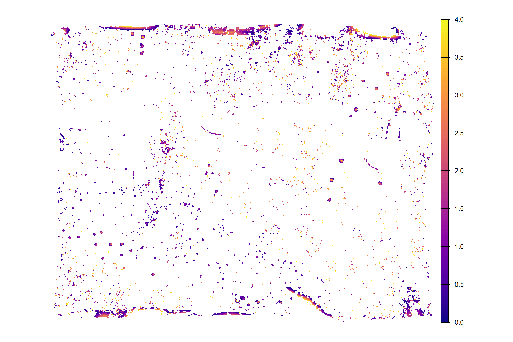
already, it looks like the piles should be distinguishable objects from this data
5.1 Method Demonstration
let’s run watershed segmentation using lidR::watershed() which is based on the bioconductor package EBIimage
watershed_ans <- lidR::watershed(
chm = cloud2raster_ans$chm_rast %>%
terra::clamp(upper = max_ht_m, lower = 0, values = F)
, th_tree = 0.1
)()
# this is a raster
watershed_ans## class : SpatRaster
## size : 2740, 3473, 1 (nrow, ncol, nlyr)
## resolution : 0.2, 0.2 (x, y)
## extent : 499264.2, 499958.8, 4317599, 4318147 (xmin, xmax, ymin, ymax)
## coord. ref. : WGS 84 / UTM zone 13N (EPSG:32613)
## source(s) : memory
## varname : chm_0.2m
## name : focal_mean
## min value : 1
## max value : 9892each value should be a unique “segment” which we can refine based on rules of expected size and shape of piles
## layer value count
## 1 1 6409 17
## 2 1 2976 61
## 3 1 4232 15
## 4 1 2522 63
## 5 1 2831 4
## 6 1 6699 169
## 7 1 6871 556
## 8 1 7036 241
## 9 1 7154 14
## 10 1 3127 7where the “value” is the segment identifier and the count is the number of raster cells assigned to that segment
how many predicted segments are there?
## [1] 9892let’s plot the raster return from the watershed segmentation
watershed_ans %>%
terra::plot(
col = c(
viridis::turbo(n = floor(terra::minmax(watershed_ans)[2]/3))
, viridis::viridis(n = floor(terra::minmax(watershed_ans)[2]/3))
, viridis::cividis(n = floor(terra::minmax(watershed_ans)[2]/3))
) %>% sample()
, legend = F
, axes = F
)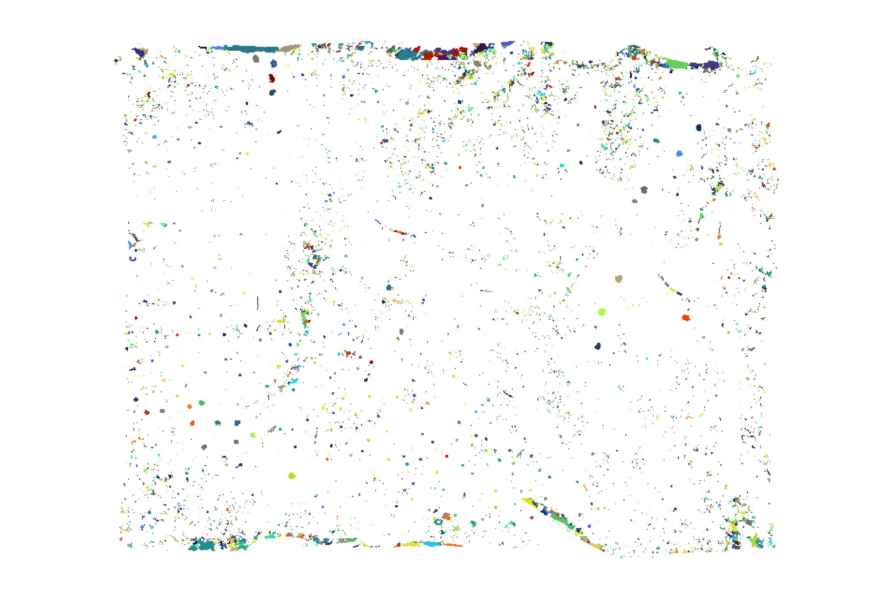
plot it with the watershed segmented piles (brown) and the actual piles (blue)
# plot it
terra::plotRGB(ortho_rast, stretch = "lin", colNA = "transparent")
terra::plot(
watershed_ans %>%
terra::as.polygons(round = F, aggregate = T, values = T, extent = F, na.rm = T)
, add = T, border = "brown", col = NA, lwd = 1.2
)
terra::plot(
slash_piles_polys %>%
sf::st_transform(terra::crs(ortho_rast)) %>% terra::vect()
, add = T, border = "blue", col = NA, lwd = 1
)
nice…we are getting close.
ideally, we want objects that: i) meet the height threshold over the entire surface of the segment (no doughnuts); ii) are not irregularly shaped (relatively few inward angles); iii) are circular in shape; and iv) meet an expected pile area threshold (minimum/maximum expected area)
5.1.1 Geometric filtering: Irregularity Filtering
now let’s try to filter based on the geometric properties of the watershed-detected segments.
we’ll make a convex hull of the polygons generated from a raster to smooth out the square edges and any inward curves or indentations, resulting in a boundary that’s always convex (no inward angles). using a convex hull we will be able to filter out:
- watershed detected segments that were actually lower branches of a tree. these will be shaped like a doughnut with circular shape but a hole in the center
- watershed detected segments that are irregularly shaped like coarse woody debris that was not organized into piles by humans
let’s convert the watershed-detected segments from raster to vector data and create a convex hull of the shapes for comparison
# vectors of segments
watershed_ans_poly <-
watershed_ans %>%
terra::as.polygons(round = F, aggregate = T, values = T, extent = F, na.rm = T) %>%
setNames("pred_id") %>%
sf::st_as_sf() %>%
sf::st_simplify() %>%
sf::st_make_valid() %>%
dplyr::filter(sf::st_is_valid(.)) %>%
dplyr::mutate(treeID=pred_id) %>%
cloud2trees::simplify_multipolygon_crowns() %>%
dplyr::select(-treeID)
# convex hulls of segments
watershed_ans_poly_chull <-
watershed_ans_poly %>%
sf::st_convex_hull() %>%
sf::st_simplify() %>%
sf::st_make_valid() %>%
dplyr::filter(sf::st_is_valid(.))lets make an example area that we’ll use to demonstrate the filtering process of the watershed detected segments
example_aoi <-
slash_piles_polys %>%
dplyr::filter(pile_id == 91) %>%
sf::st_as_sfc() %>%
sf::st_transform(sf::st_crs(watershed_ans_poly)) %>%
sf::st_buffer(55) %>%
sf::st_bbox() %>%
sf::st_as_sfc() %>%
sf::st_as_sf()
# watershed_ans_poly %>%
# # dplyr::filter(pred_id==241) %>%
# dplyr::filter(pred_id==11916) %>%
# # dplyr::slice_sample(n = 1) %>%
# sf::st_bbox() %>%
# sf::st_as_sfc() %>%
# sf::st_buffer(55)
# chm of example
buff_temp <- 7.3
example_aoi_chm <- cloud2raster_ans$chm_rast %>%
terra::crop(
example_aoi %>%
sf::st_buffer(buff_temp) %>%
sf::st_transform(terra::crs(cloud2raster_ans$chm_rast)) %>%
terra::vect()
) %>%
terra::mask(
example_aoi %>%
sf::st_buffer(buff_temp) %>%
sf::st_transform(terra::crs(cloud2raster_ans$chm_rast)) %>%
terra::vect()
)
# list of examples
pred_id_temp <- watershed_ans_poly %>%
sf::st_intersection(example_aoi) %>%
dplyr::pull(pred_id)
# plot it
plt_ortho_example <-
ortho_plt_fn(
my_ortho_rast = ortho_rast, stand = example_aoi
, buffer = buff_temp
)here is the CHM of the example area. can you pick out the slash piles?
example_aoi_chm %>%
terra::as.data.frame(xy=T) %>%
dplyr::rename(f=3) %>%
ggplot2::ggplot() +
ggplot2::geom_tile(mapping = ggplot2::aes(x=x,y=y,fill=f)) +
ggplot2::geom_sf(data = example_aoi, fill = NA, color = "black", lwd = 0.8) +
ggplot2::scale_fill_viridis_c(option = "plasma") +
ggplot2::labs(fill = "CHM (m)") +
ggplot2::scale_x_continuous(expand = c(0, 0)) +
ggplot2::scale_y_continuous(expand = c(0, 0)) +
ggplot2::theme_void() +
ggplot2::theme(legend.position = "top")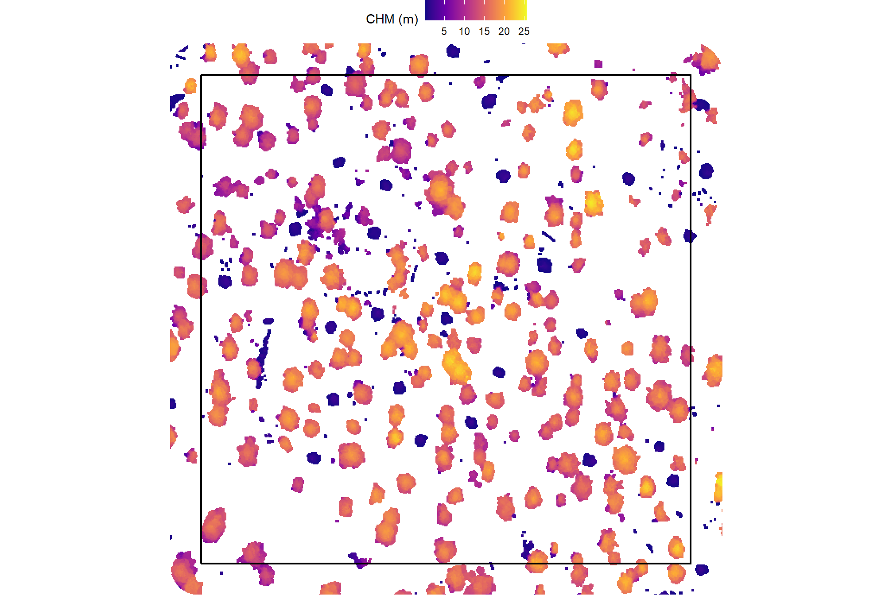
here is the RGB of the example area. can you pick out the slash piles?

we’ll add on the ground truth piles in blue on the RGB. how many did you find? be honest.
plt_ortho_example +
ggplot2::geom_sf(data = example_aoi, fill = NA, color = "black", lwd = 0.8) +
ggplot2::geom_sf(
data = slash_piles_polys %>%
dplyr::inner_join(
slash_piles_polys %>%
sf::st_transform(sf::st_crs(watershed_ans_poly)) %>%
sf::st_intersection(example_aoi) %>%
sf::st_drop_geometry() %>%
dplyr::select(pile_id)
) %>%
sf::st_transform(sf::st_crs(watershed_ans_poly))
, fill = NA, color = "blue", lwd = 0.6
) +
ggplot2::theme_void() +
ggplot2::theme(legend.position = "none")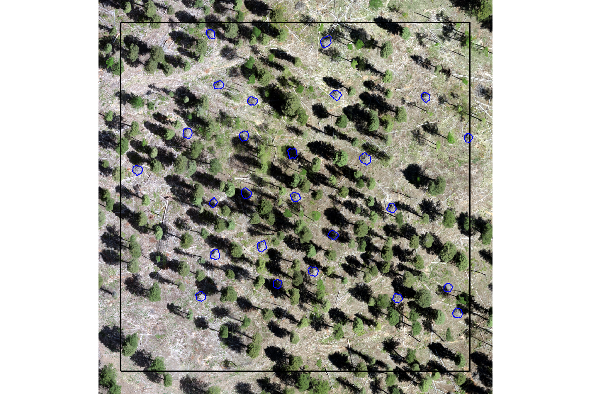
would you have done better if you had both the CHM and RGB data?
plt_ortho_example +
ggplot2::geom_tile(
data = example_aoi_chm %>%
terra::as.data.frame(xy=T) %>%
dplyr::rename(f=3)
, mapping = ggplot2::aes(x=x,y=y,fill=f)
, alpha = 0.4
) +
ggplot2::scale_fill_viridis_c(option = "plasma") +
ggplot2::geom_sf(data = example_aoi, fill = NA, color = "black", lwd = 0.8) +
ggplot2::geom_sf(
data = slash_piles_polys %>%
dplyr::inner_join(
slash_piles_polys %>%
sf::st_transform(sf::st_crs(watershed_ans_poly)) %>%
sf::st_intersection(example_aoi) %>%
sf::st_drop_geometry() %>%
dplyr::select(pile_id)
) %>%
sf::st_transform(sf::st_crs(watershed_ans_poly))
, fill = NA, color = "blue", lwd = 0.6
) +
ggplot2::theme_void() +
ggplot2::theme(legend.position = "none")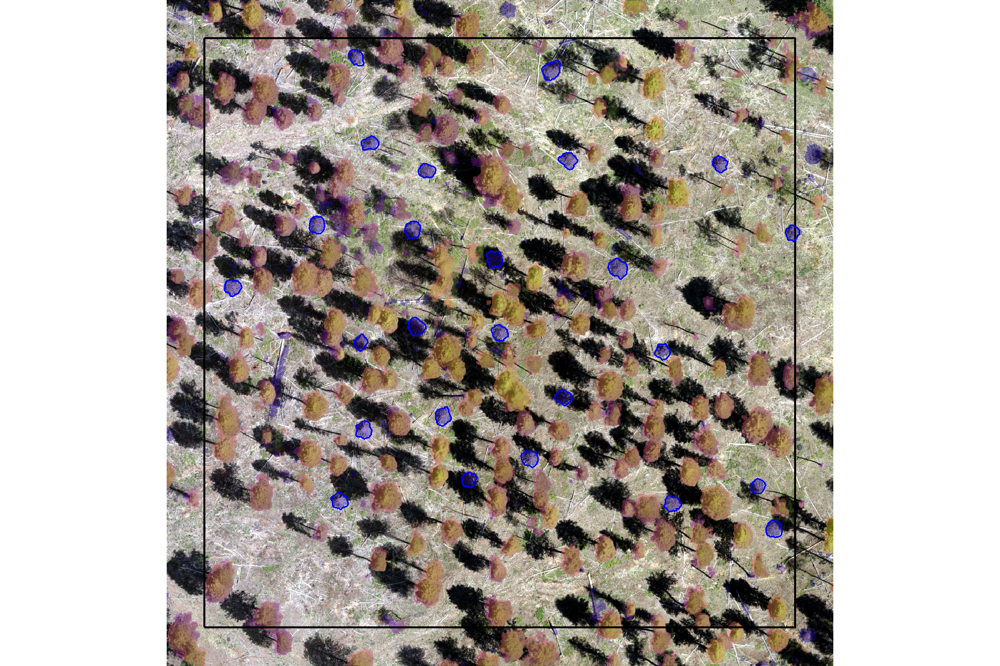
now, we’ll plot our example watershed detected segments as vectors (brown) compared with the ground truth piles (blue)
plt_ortho_example +
ggplot2::geom_sf(data = example_aoi, fill = NA, color = "black", lwd = 0.8) +
ggplot2::geom_sf(
data = slash_piles_polys %>%
dplyr::inner_join(
slash_piles_polys %>%
sf::st_transform(sf::st_crs(watershed_ans_poly)) %>%
sf::st_intersection(example_aoi) %>%
sf::st_drop_geometry() %>%
dplyr::select(pile_id)
) %>%
sf::st_transform(sf::st_crs(watershed_ans_poly))
, fill = NA, color = "blue", lwd = 0.6
) +
ggplot2::geom_sf(
data = watershed_ans_poly %>%
dplyr::filter(pred_id %in% pred_id_temp)
# , fill = NA, color = "brown", lwd = 0.6
, fill = "brown", color = NA, lwd = 0, alpha = 0.6
) +
ggplot2::theme_void() +
ggplot2::theme(legend.position = "none")
notice how the watershed detected segments have “blocky” outlines since they were generated from the CHM raster
let’s plot our example watershed detected segments as vectors (brown) and convex hull of the segments (orange) compared with the ground truth piles (blue)
plt_ortho_example +
ggplot2::geom_sf(data = example_aoi, fill = NA, color = "black", lwd = 0.8) +
ggplot2::geom_sf(
data = slash_piles_polys %>%
dplyr::inner_join(
slash_piles_polys %>%
sf::st_transform(sf::st_crs(watershed_ans_poly)) %>%
sf::st_intersection(example_aoi) %>%
sf::st_drop_geometry() %>%
dplyr::select(pile_id)
) %>%
sf::st_transform(sf::st_crs(watershed_ans_poly))
, fill = NA, color = "blue", lwd = 0.6
) +
ggplot2::geom_sf(
data = watershed_ans_poly %>%
dplyr::filter(pred_id %in% pred_id_temp)
# , fill = NA, color = "brown", lwd = 0.6
, fill = "brown", color = NA, lwd = 0, alpha = 0.6
) +
ggplot2::geom_sf(
data = watershed_ans_poly_chull %>%
dplyr::filter(pred_id %in% pred_id_temp)
, fill = NA, color = "orangered", lwd = 0.6
) +
ggplot2::theme_void() +
ggplot2::theme(legend.position = "none")
notice how the most irregularly-shaped predicted segments have much less overlap with the convex hull shapes than the more regularly shaped segments
let’s filter out segments that have holes in them or are very irregularly shaped by comparing the area of the polygon and convex hull
# min required overlap between the predicted pile and the convex hull of the predicted pile
pct_chull_overlap <- 0.7
# compare areas
watershed_keep_overlaps_chull_pred_id <- watershed_ans_poly %>%
dplyr::mutate(poly_area_m2 = sf::st_area(.) %>% as.numeric()) %>%
dplyr::inner_join(
watershed_ans_poly_chull %>%
dplyr::mutate(chull_area_m2 = sf::st_area(.) %>% as.numeric()) %>%
sf::st_drop_geometry()
, by = "pred_id"
) %>%
dplyr::mutate(
pct_chull = poly_area_m2/chull_area_m2
) %>%
dplyr::filter(
pct_chull >= pct_chull_overlap
) %>%
dplyr::pull(pred_id)let’s make a function to ingest a spatial data frame and return polygons filtered for irregularity using this convex hull process
st_irregular_remove <- function(
sf_data
# min required overlap between the predicted pile and the convex hull of the predicted pile
, pct_chull_overlap = 0.7
) {
if(!inherits(sf_data, "sf")){stop("must pass `sf` data object")}
# if not polygons
if( !(sf::st_is(sf_data, type = c("POLYGON", "MULTIPOLYGON")) %>% all()) ){
stop(paste0(
"`sf_data` data must be an `sf` class object with POLYGON geometry (see [sf::st_geometry_type()])"
))
}
# convex hulls of segments
poly_chull <-
sf_data %>%
sf::st_convex_hull() %>%
sf::st_simplify() %>%
sf::st_make_valid()
# dplyr::filter(sf::st_is_valid(.))
# compare areas
if(nrow(poly_chull)!=nrow(sf_data)){
stop("could not make valid convex hulls from provided polygon data")
}else{
area_comp <- sf_data %>%
dplyr::mutate(area_xxxx = sf::st_area(.) %>% as.numeric()) %>%
dplyr::bind_cols(
poly_chull %>%
dplyr::mutate(chull_area_xxxx = sf::st_area(.) %>% as.numeric()) %>%
dplyr::select(chull_area_xxxx) %>%
sf::st_drop_geometry()
) %>%
dplyr::mutate(
pct_chull = area_xxxx/chull_area_xxxx
) %>%
dplyr::filter(
pct_chull >= pct_chull_overlap
) %>%
dplyr::select(-c(area_xxxx,chull_area_xxxx))
return(area_comp)
}
}run it
# run it
watershed_keep_overlaps_chull_pred_id <-
watershed_ans_poly %>%
st_irregular_remove(pct_chull_overlap = pct_chull_overlap) %>%
dplyr::pull(pred_id)how many piles are remaining after this shape irregularity filtering?
## [1] 9163now, we’ll look at which piles meet the minimum overlap threshold (black outline) between the segmented polygon and the convex hull and will be kept compared to those that did not meet the irregularity threshold (red) and will be removed
p_temp <- plt_ortho_example +
ggplot2::geom_sf(data = example_aoi, fill = NA, color = "black", lwd = 0.8) +
ggplot2::geom_sf(
data = slash_piles_polys %>%
dplyr::inner_join(
slash_piles_polys %>%
sf::st_transform(sf::st_crs(watershed_ans_poly)) %>%
sf::st_intersection(example_aoi) %>%
sf::st_drop_geometry() %>%
dplyr::select(pile_id)
) %>%
sf::st_transform(sf::st_crs(watershed_ans_poly))
, fill = NA, color = "blue", lwd = 0.6
) +
ggplot2::geom_sf(
data = watershed_ans_poly %>%
dplyr::filter(pred_id %in% pred_id_temp)
# , fill = NA, color = "brown", lwd = 0.6
, fill = "brown", color = NA, lwd = 0, alpha = 0.6
) +
ggplot2::geom_sf(
data = watershed_ans_poly_chull %>%
dplyr::filter(pred_id %in% pred_id_temp) %>%
dplyr::mutate(
meets_overlap = pred_id %in% watershed_keep_overlaps_chull_pred_id
)
, ggplot2::aes(color = meets_overlap)
, fill = NA, lwd = 0.6
) +
ggplot2::scale_color_manual(values = c("red","black")) +
ggplot2::theme_void() +
ggplot2::theme(legend.position = "top")
p_temp
let’s see which predictions we are left with after filtering for segment shape irregularity with based on the overlap with the convex hull
plot the remaining example watershed detected segments as vectors (brown) compared with the ground truth piles (blue)
plt_ortho_example +
ggplot2::geom_sf(data = example_aoi, fill = NA, color = "black", lwd = 0.8) +
ggplot2::geom_sf(
data = slash_piles_polys %>%
dplyr::inner_join(
slash_piles_polys %>%
sf::st_transform(sf::st_crs(watershed_ans_poly)) %>%
sf::st_intersection(example_aoi) %>%
sf::st_drop_geometry() %>%
dplyr::select(pile_id)
) %>%
sf::st_transform(sf::st_crs(watershed_ans_poly))
, fill = NA, color = "blue", lwd = 0.6
) +
ggplot2::geom_sf(
data = watershed_ans_poly %>%
dplyr::filter(pred_id %in% pred_id_temp) %>%
dplyr::filter(pred_id %in% watershed_keep_overlaps_chull_pred_id)
# , fill = NA, color = "brown", lwd = 0.6
, fill = "brown", color = NA, lwd = 0, alpha = 0.6
) +
ggplot2::theme_void() +
ggplot2::theme(legend.position = "none")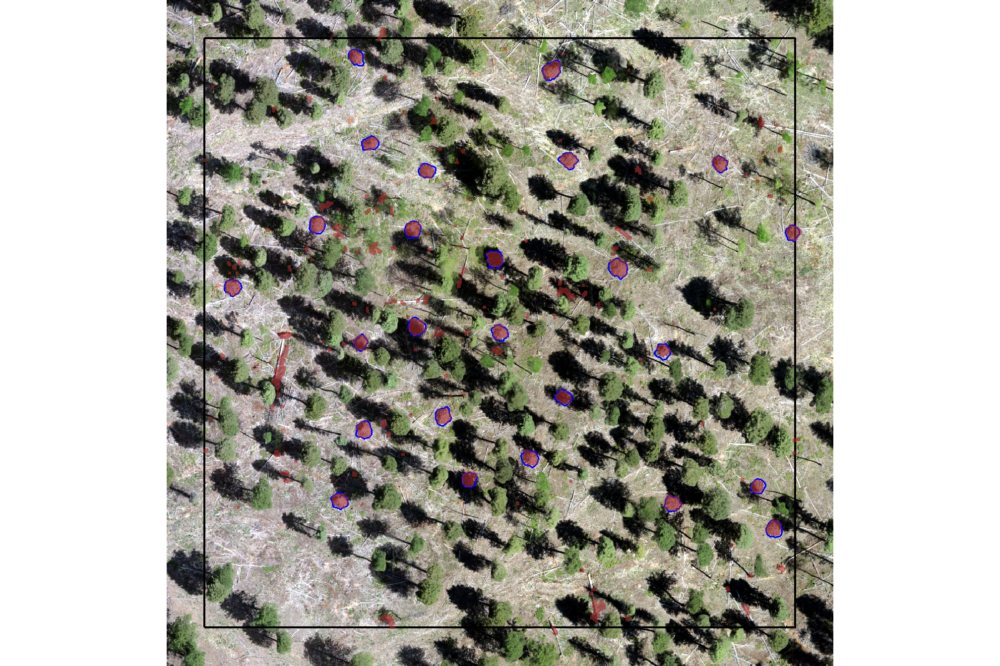
it looks like the filtering using convex hulls successfully removed most segments with irregular shapes and holes.
following this, we’ll apply an area filter based on the expected minimum and maximum pile areas and then we will apply a circularity filter that uses least squares circle fitting to remove non-circular shapes. this expected area and geometric shape filtering is performed to ensure that only the most likely slash pile candidates are retained.
5.1.2 Area Filtering
apply an area filter based on the minimum and maximum expected pile areas. in practice, the expected area range defined here would be based on the pile construction prescription and potentially adjusted based on a sample of field-measured values after treatment completion
##### area thresholds
min_area_m2 <- 2
# Two standard US parking spaces, typically measuring 9 feet by 18 feet,
# are roughly equivalent to 30.25 square meters. Each space is approximately 15.125 square meters.
# 15.125*3
max_area_m2 <- 50
# filter the remaining segments by area and st_irregular_remove removes irregular preds
watershed_ans_poly <-
watershed_ans_poly %>%
# dplyr::filter(pred_id %in% watershed_keep_overlaps_chull_pred_id) %>%
st_irregular_remove(pct_chull_overlap = pct_chull_overlap) %>%
dplyr::mutate(area_xxxx = sf::st_area(.) %>% as.numeric()) %>%
# filter out the segments that don't meet the size thresholds
dplyr::filter(
dplyr::coalesce(area_xxxx,0) >= min_area_m2
& dplyr::coalesce(area_xxxx,0) <= max_area_m2
) %>%
dplyr::select(-c(area_xxxx))how many piles are remaining after the shape irregularity filtering and area filtering?
## [1] 1289example of watershed detected segments as vectors (brown) filtered to remove irregular shapes and segments outside of the expected area thresholds; compared with the ground truth piles (blue)
plt_ortho_example +
ggplot2::geom_sf(data = example_aoi, fill = NA, color = "black", lwd = 0.8) +
ggplot2::geom_sf(
data = slash_piles_polys %>%
dplyr::inner_join(
slash_piles_polys %>%
sf::st_transform(sf::st_crs(watershed_ans_poly)) %>%
sf::st_intersection(example_aoi) %>%
sf::st_drop_geometry() %>%
dplyr::select(pile_id)
) %>%
sf::st_transform(sf::st_crs(watershed_ans_poly))
, fill = NA, color = "blue", lwd = 0.6
) +
ggplot2::geom_sf(
data = watershed_ans_poly %>%
dplyr::filter(pred_id %in% pred_id_temp) %>%
dplyr::filter(pred_id %in% watershed_keep_overlaps_chull_pred_id)
# , fill = NA, color = "brown", lwd = 0.6
, fill = "brown", color = NA, lwd = 0, alpha = 0.6
) +
ggplot2::theme_void() +
ggplot2::theme(legend.position = "none")
it looks like we are on the right track. now we need to remove the remaining candidate segments that do not meet our expectations for having a circular base
5.1.3 Geometric filtering: Circularity Filtering
now, let’s apply a circle-fitting algorithm to remove non-circular segments from the remaining segments
Least squares circle fitting is a method to find the circle that best approximates a set of data points by minimizing the sum of the squared distances between the points and the circle. The lidR::fit_circle() function finds the best-fitting flat, horizontal circle for a group of 3D points, even if some of those points are messy or don’t quite fit. It determines the circle’s center and size, and also provides an “angular range” to show how much of a complete circle the points actually form, which is a more reliable measure than a simple error value (e.g. RMSE).
The “angular range” tells you how much of a complete circle the points in the watershed-detected segment actually cover. Imagine drawing a circle, and then only having points along a part of its edge, here’s how to interpret it:
- 360 degrees suggests the points form a full, unbroken circle, like the base of a perfectly round slash pile.
- 180 degrees would mean the points only form a half-circle or a semi-circle.
A smaller range (e.g., 90 degrees) indicates just a partial arc or a small curve. This can help us determine if a group of points truly represents a circular shape, which is useful for identifying objects like slash piles that are expected to have a round base.
we’ll define a function to pass our sf polygon data of watershed detected segments and return a sf data of the fitted circles
##########################
# 1)
# function to return sf circle from xy center and radius in given crs
# to handle return from common circle fitting algorithms
##########################
point_xy_radius_to_circle_sf <- function(
center_x
, center_y
, radius
, crs = NULL
) {
if(is.null(crs)){stop("need a crs, guy")}
# create a point geometry object
center_point <- sf::st_point(c(center_x, center_y))
# create an sf object from the point
center_sf <- sf::st_sf(
data.frame(
center_x = center_x
, center_y = center_y
, radius = radius
)
, geometry = sf::st_sfc(center_point)
, crs = crs
)
# create the circle geometry by buffering the point
circle_sf <- sf::st_buffer(center_sf, dist = radius)
return(circle_sf)
}
##########################
# 2)
# function to generate 2d xy points from polygon feature
# to pass to common circle fitting algorithms
# !!! only works with a singular polygon at a time
##########################
poly_to_points <- function(
sf_data
, as_spatial = F # if set to F, returns xy dataframe; if T returns sf data
, simplify_multipolygons = F # if set to T, multipolygons are simplified by keeping the largest segment
) {
if(!inherits(sf_data, "sf")){stop("must pass `sf` data object")}
# just work with the first
if(nrow(sf_data)>1){stop("this function only works with a single record at a time")}
# simplify_multipolygons
if(simplify_multipolygons){
sf_data <- sf_data %>%
dplyr::mutate(treeID=1) %>%
cloud2trees::simplify_multipolygon_crowns() %>%
dplyr::select(-treeID)
}
# get point coordinates
xy_temp <-
sf_data %>%
sf::st_coordinates() %>%
dplyr::as_tibble() %>%
dplyr::rename_with(tolower) %>%
dplyr::select(x,y) %>%
dplyr::mutate(z=0)
# as_spatial
if(as_spatial){
xy_temp <- xy_temp %>%
sf::st_as_sf(coords = c("x", "y"), crs = sf::st_crs(sf_data), remove = F)
}
return(xy_temp)
}
# watershed_ans_poly %>%
# dplyr::filter(pred_id %in% c(7717)) %>%
# # poly_to_points(as_spatial = T) %>%
# poly_to_points(as_spatial = F) %>%
# ggplot() +
# # geom_sf()
# geom_point(aes(x=x,y=y))
##########################
# 3)
# function to combine poly_to_points, lidR::fit_circle, and point_xy_radius_to_circle_sf
# !!! only works with a singular polygon at a time
##########################
poly_circle_fit <- function(
poly
# if set to T, multipolygons are simplified by keeping the largest segment
, simplify_multipolygons = F
# number of iterations for the RANSAC fitting algorithm
, num_iterations = 100
# threshold value; points are considered inliers if their residuals are below this value
, inlier_threshold = 0.01
) {
# poly_to_points
poly_to_points_ans <- poly_to_points(poly, as_spatial = F, simplify_multipolygons = simplify_multipolygons)
# fit_circle
fit_circle_ans <- lidR::fit_circle(
points = poly_to_points_ans %>% as.matrix()
# number of iterations for the RANSAC fitting algorithm
, num_iterations = num_iterations
# threshold value; points are considered inliers if their residuals are below this value
, inlier_threshold = inlier_threshold
)
# point_xy_radius_to_circle_sf
ans <- point_xy_radius_to_circle_sf(
center_x = fit_circle_ans$center_x
, center_y = fit_circle_ans$center_y
, radius = fit_circle_ans$radius
, crs = sf::st_crs(poly)
)
# add other vars
ans <- ans %>%
dplyr::mutate(
covered_arc_degree = fit_circle_ans$covered_arc_degree
, percentage_inlier = fit_circle_ans$percentage_inlier
, percentage_inside = fit_circle_ans$percentage_inside
# , inliers = fit_circle_ans$inliers
)
# return
return(ans)
}
# watershed_ans_poly %>%
# dplyr::filter(pred_id == 7717) %>%
# poly_circle_fit() %>%
# ggplot() + geom_sf() +
# geom_sf(
# data = filtered_watershed_ans_poly %>% dplyr::filter(pred_id == 7717) %>% poly_to_points(as_spatial = T)
# )
# watershed_ans_poly %>%
# dplyr::filter(pred_id == 7717) %>%
# poly_circle_fit() %>%
# dplyr::glimpse()
##########################
# 4)
# function to combine poly_to_points, lidR::fit_circle, and point_xy_radius_to_circle_sf
# !!! only works with a singular polygon at a time
##########################
sf_data_circle_fit <- function(sf_data, num_iterations = 100) {
if(!inherits(sf_data, "sf")){stop("must pass `sf` data object")}
# apply poly_circle_fit() to each row to get fitted circle sf data
cf <- sf_data %>%
dplyr::ungroup() %>%
dplyr::mutate(id_xxx = dplyr::row_number()) %>%
dplyr::nest_by(id_xxx) %>%
dplyr::mutate(
circle_fit = poly_circle_fit(poly = data, num_iterations=num_iterations)
) %>%
dplyr::pull(circle_fit)
# combine with original data but drop original geom
df <- sf_data %>%
sf::st_drop_geometry() %>%
dplyr::bind_cols(cf) %>%
sf::st_as_sf(crs = sf::st_crs(sf_data))
# return
return(df)
}let’s apply the sf_data_circle_fit() function we just defined fits the best circle using lidR::fit_circle() to each watershed detected segment to get a spatial data frame with the best fitting circle for each segment
# apply the sf_data_circle_fit() which takes each segment polygon, transforms it to points, and the fits the best circle
set.seed(22)
watershed_ans_poly_circle_fit <- sf_data_circle_fit(watershed_ans_poly, num_iterations = 111)
# what is this?
watershed_ans_poly_circle_fit %>% dplyr::glimpse()## Rows: 1,289
## Columns: 9
## $ pred_id <dbl> 8, 12, 20, 24, 26, 32, 38, 47, 50, 52, 53, 54, 55, …
## $ pct_chull <dbl> 0.7577640, 0.7764706, 0.7197802, 0.8000000, 0.81012…
## $ center_x <dbl> 499944.3, 499739.9, 499720.8, 499778.0, 499780.8, 4…
## $ center_y <dbl> 4317698, 4317898, 4317853, 4318048, 4318065, 431761…
## $ radius <dbl> 1.144859e+00, 1.305153e+00, 1.612613e+00, 4.499848e…
## $ covered_arc_degree <dbl> 0, 0, 0, 0, 0, 0, 0, 0, 0, 0, 0, 0, 0, 6, 0, 0, 0, …
## $ percentage_inlier <dbl> 0.22857143, 0.20000000, 0.12698413, 0.14583333, 0.2…
## $ percentage_inside <dbl> 0.57142857, 0.45714286, 0.50793651, 0.10416667, 0.6…
## $ geometry <POLYGON [m]> POLYGON ((499945.4 4317698,..., POLYGON ((4…let’s check out the distribution of the metrics that quantify the fit of the circle
watershed_ans_poly_circle_fit %>%
sf::st_drop_geometry() %>%
dplyr::select(covered_arc_degree,percentage_inlier,percentage_inside) %>%
tidyr::pivot_longer(dplyr::everything()) %>%
ggplot2::ggplot(mapping = ggplot2::aes(x = value, fill = name)) +
ggplot2::geom_density(color = NA) +
ggplot2::facet_wrap(facets = ggplot2::vars(name), scales = "free") +
ggplot2::scale_fill_viridis_d(option = "rocket", begin = 0.2, end = 0.8, alpha = 0.8) +
ggplot2::theme_light() +
ggplot2::theme(
axis.text.y = ggplot2::element_blank()
, axis.text.x = ggplot2::element_text(angle = 90, vjust = 0.5)
, axis.title.x = ggplot2::element_blank()
, legend.position = "none"
, strip.text = ggplot2::element_text(color = "black", size = 10)
)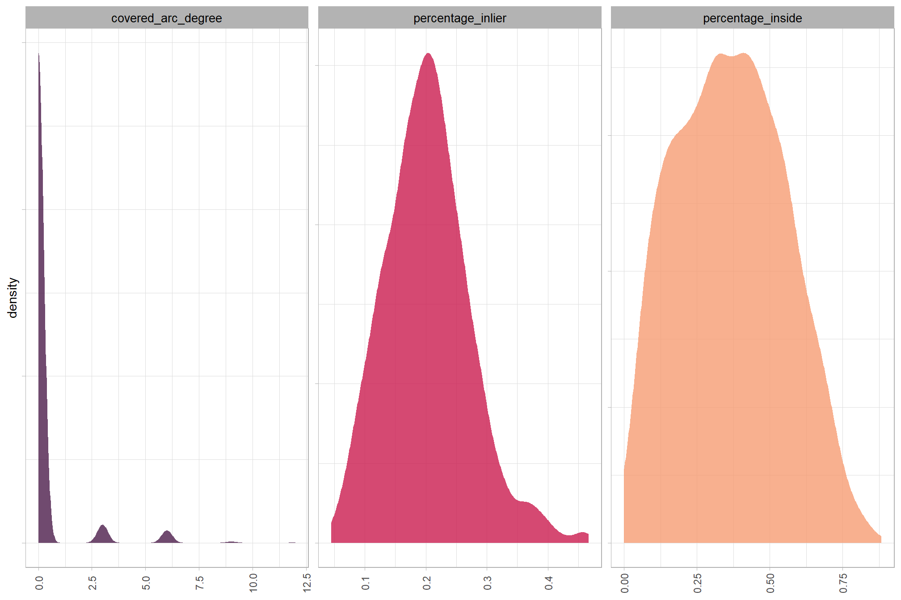
let’s look at the best fitting circles using the remaining piles from our example above
example of watershed detected segments as vectors (brown) filtered to remove irregular shapes and segments outside of the expected area thresholds; best fitting circle of the segments (orange); compared with the ground truth piles (blue)
plt_ortho_example +
ggplot2::geom_sf(data = example_aoi, fill = NA, color = "black", lwd = 0.8) +
ggplot2::geom_sf(
data = slash_piles_polys %>%
dplyr::inner_join(
slash_piles_polys %>%
sf::st_transform(sf::st_crs(watershed_ans_poly)) %>%
sf::st_intersection(example_aoi) %>%
sf::st_drop_geometry() %>%
dplyr::select(pile_id)
) %>%
sf::st_transform(sf::st_crs(watershed_ans_poly))
, fill = NA, color = "blue", lwd = 0.6
) +
ggplot2::geom_sf(
data = watershed_ans_poly %>%
dplyr::filter(pred_id %in% pred_id_temp) %>%
dplyr::filter(pred_id %in% watershed_keep_overlaps_chull_pred_id)
# , fill = NA, color = "brown", lwd = 0.6
, fill = "brown", color = NA, lwd = 0, alpha = 0.6
) +
ggplot2::geom_sf(
data = watershed_ans_poly_circle_fit %>%
dplyr::filter(pred_id %in% pred_id_temp) %>%
dplyr::filter(pred_id %in% watershed_keep_overlaps_chull_pred_id) %>%
dplyr::filter(
as.numeric(sf::st_area(.)) < (as.numeric(sf::st_area(example_aoi))*0.5)
)
, fill = NA, color = "orangered", lwd = 0.6
) +
ggplot2::theme_void() +
ggplot2::theme(legend.position = "none")
the best fitting circles on the linear watershed detected segments are not very well fitting, we can filter using the intersection over union (IoU) between the circle and the predicted segment. we’ll use the IoU function we defined in this earlier section.
watershed_circle_fit_iou <-
watershed_ans_poly$pred_id %>%
unique() %>%
purrr::map(\(x)
ground_truth_single_match(
gt_inst = watershed_ans_poly %>%
dplyr::filter(pred_id == x)
, gt_id = "pred_id"
, predictions = watershed_ans_poly_circle_fit %>%
dplyr::filter(pred_id == x) %>%
dplyr::select(pred_id) %>%
dplyr::rename(circ_pred_id = pred_id)
, pred_id = "circ_pred_id"
, min_iou_pct = 0
)
) %>%
dplyr::bind_rows()
# what did we get?
watershed_circle_fit_iou %>% dplyr::glimpse()## Rows: 1,279
## Columns: 5
## $ pred_id <dbl> 8, 12, 20, 24, 26, 32, 38, 47, 52, 53, 54, 55, 56, 57, 76…
## $ i_area <dbl> 2.28624273, 2.12113426, 3.82323811, 0.16347654, 2.5174554…
## $ u_area <dbl> 4.269565, 5.867885, 9.582808, 4.952362, 4.961554, 12.6693…
## $ iou <dbl> 0.535474346, 0.361481880, 0.398968460, 0.033009810, 0.507…
## $ circ_pred_id <dbl> 8, 12, 20, 24, 26, 32, 38, 47, 52, 53, 54, 55, 56, 57, 76…what is the distribution of IoU of the watershed segments and the best fit circle of those segments?
watershed_circle_fit_iou %>%
ggplot2::ggplot(mapping = ggplot2::aes(x = iou)) +
ggplot2::geom_density(color = NA, fill = "navy", alpha = 0.8) +
ggplot2::labs(
x = "IoU of the watershed segments and the best fit circle"
) +
ggplot2::scale_x_continuous(labels = scales::percent) +
ggplot2::theme_light() +
ggplot2::theme(
axis.text.y = ggplot2::element_blank()
, legend.position = "none"
, strip.text = ggplot2::element_text(color = "black", size = 10)
)
let’s color our predicted segments by the IoU with the best fitting circle
plt_ortho_example +
ggplot2::geom_sf(data = example_aoi, fill = NA, color = "black", lwd = 0.8) +
ggplot2::geom_sf(
data = slash_piles_polys %>%
dplyr::inner_join(
slash_piles_polys %>%
sf::st_transform(sf::st_crs(watershed_ans_poly)) %>%
sf::st_intersection(example_aoi) %>%
sf::st_drop_geometry() %>%
dplyr::select(pile_id)
) %>%
sf::st_transform(sf::st_crs(watershed_ans_poly))
, fill = NA, color = "blue", lwd = 0.6
) +
ggplot2::geom_sf(
data = watershed_ans_poly %>%
dplyr::filter(pred_id %in% pred_id_temp) %>%
dplyr::filter(pred_id %in% watershed_keep_overlaps_chull_pred_id) %>%
dplyr::left_join(watershed_circle_fit_iou, by = "pred_id")
, mapping = ggplot2::aes(fill = iou)
, alpha = 0.9
, lwd = 0
, color = NA
) +
ggplot2::geom_sf(
data = watershed_ans_poly_circle_fit %>%
dplyr::filter(pred_id %in% pred_id_temp) %>%
dplyr::filter(pred_id %in% watershed_keep_overlaps_chull_pred_id) %>%
dplyr::filter(
as.numeric(sf::st_area(.)) < (as.numeric(sf::st_area(example_aoi))*0.5)
)
, fill = NA, color = "orangered", lwd = 0.6
) +
ggplot2::scale_fill_fermenter(
n.breaks = 10 # 10 use 10 if can go full range 0-1
, palette = "PuOr" # "BrBG"
, direction = 1
, limits = c(0,1) # use c(0,1) if can go full range 0-1
, labels = scales::percent
, na.value = "sienna4"
) +
ggplot2::labs(fill="IoU") +
ggplot2::theme_void() +
ggplot2::theme(
legend.position = "top"
, legend.text = ggplot2::element_text(size = 6, angle = 90, vjust = 0.5)
)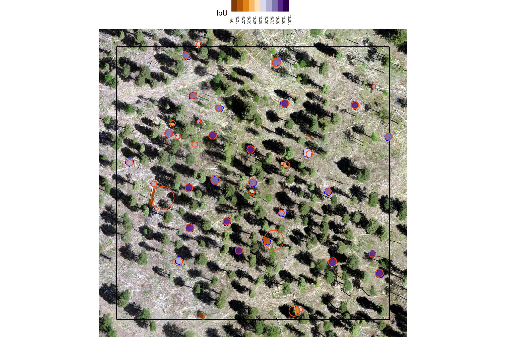
we’ll set a threshold for the minimum IoU to further filter for segments that are approximately round, this filter should remove linear objects from the watershed detections
# min required IoU between the predicted pile and the best fit circle of the predicted pile
pct_iou_circle_fit <- 0.55
# compare iou
watershed_keep_circle_fit_pred_id <- watershed_circle_fit_iou %>%
dplyr::filter(iou>=pct_iou_circle_fit) %>%
dplyr::pull(pred_id)how many piles are remaining after the shape irregularity filtering, area threshold filtering, and circle fitting filtering?
## [1] 578let’s check out the remaining watershed detected piles after: 1) filtering out the irregularly shaped segments (filtered using the convex hull), 2) filtering for expected pile size, and 3) filtering out the non-circular segments (filtered using circle fitting)
example of watershed detected segments as vectors (brown) filtered to remove irregular shapes, segments outside of the expected area thresholds, and non-circular segments; compared with the ground truth piles (blue)
plt_ortho_example +
ggplot2::geom_sf(data = example_aoi, fill = NA, color = "black", lwd = 0.8) +
ggplot2::geom_sf(
data = slash_piles_polys %>%
dplyr::inner_join(
slash_piles_polys %>%
sf::st_transform(sf::st_crs(watershed_ans_poly)) %>%
sf::st_intersection(example_aoi) %>%
sf::st_drop_geometry() %>%
dplyr::select(pile_id)
) %>%
sf::st_transform(sf::st_crs(watershed_ans_poly))
, fill = NA, color = "blue", lwd = 0.6
) +
ggplot2::geom_sf(
data = watershed_ans_poly %>%
dplyr::filter(pred_id %in% pred_id_temp) %>%
dplyr::filter(pred_id %in% watershed_keep_overlaps_chull_pred_id) %>%
dplyr::filter(pred_id %in% watershed_keep_circle_fit_pred_id)
# , fill = NA, color = "brown", lwd = 0.6
, fill = "brown", color = NA, lwd = 0, alpha = 0.6
) +
ggplot2::theme_void() +
ggplot2::theme(legend.position = "none")
5.1.4 Area and Volume from CHM
We’ll use the CHM raster to calculate area, height, and volume for each candidate pile to reflect the irregular pile footprints and elevation profiles that better represent real-world objects than assuming perfect geometric shapes as is common for quantifying slash pile structure
after we calculate the height of the pile based on the maximum height withing the lower CHM slice of the pile footprint, we will lastly apply our filter for the minimum expected pile height. this is the last filtering step to give us our final, structurally-detected slash pile prediction list
########################################
# use the remaining segments that meet the geometric and area filtering
# to filter the watershed raster
########################################
smooth_watershed_ans <- watershed_ans %>%
terra::mask(
watershed_ans_poly %>% #these are irregularity and area filtered already
dplyr::filter(pred_id %in% watershed_keep_circle_fit_pred_id) %>%
terra::vect()
, updatevalue=NA
)
names(smooth_watershed_ans) <- "pred_id"
########################################
# mask the chm rast to these remaining segments
########################################
smooth_chm_rast <- cloud2raster_ans$chm_rast %>%
terra::clamp(upper = max_ht_m, lower = 0, values = F) %>%
terra::mask(smooth_watershed_ans)
# terra::plot(smooth_chm_rast)
# now mask the watershed_ans raster to only keep cells that are in the originating CHM
smooth_watershed_ans <- smooth_watershed_ans %>% terra::mask(smooth_chm_rast)
# terra::plot(smooth_watershed_ans, col = viridis::turbo(555) %>% sample(), legend = F)
########################################################################################
## calculate raster-based area and volume
########################################################################################
# first, calculate the area of each cell
area_rast <- terra::cellSize(smooth_chm_rast)
names(area_rast) <- "area_m2"
# area_rast %>% terra::plot()
# then, multiply area by the CHM (elevation) for each cell to get a raster with cell volumes
vol_rast <- area_rast*smooth_chm_rast
names(vol_rast) <- "volume_m3"
# vol_rast %>% terra::plot()
# sum area within each segment to get the total area
area_df <- terra::zonal(x = area_rast, z = smooth_watershed_ans, fun = "sum", na.rm = T)
# area_df %>% dplyr::glimpse()
# sum volume within each segment to get the total volume
vol_df <- terra::zonal(x = vol_rast, z = smooth_watershed_ans, fun = "sum", na.rm = T)
# vol_df %>% dplyr::glimpse()
# max ht within each segment to get the max ht
ht_df <- terra::zonal(x = smooth_chm_rast, z = smooth_watershed_ans, fun = "max", na.rm = T) %>%
dplyr::rename(max_height_m=2)
# let's convert the smoothed and filtered watershed-detected segments from raster to vector data
# vectors of segments
watershed_ans_poly <-
smooth_watershed_ans %>%
terra::as.polygons(round = F, aggregate = T, values = T, extent = F, na.rm = T) %>%
sf::st_as_sf() %>%
sf::st_simplify() %>%
sf::st_make_valid() %>%
dplyr::filter(sf::st_is_valid(.)) %>%
dplyr::mutate(treeID=pred_id) %>%
cloud2trees::simplify_multipolygon_crowns() %>%
dplyr::select(-treeID)
# add area and volume to our vector data
# we'll do this with a slick trick to perform multiple joins succinctly using purrr::reduce
watershed_ans_poly <-
purrr::reduce(
list(watershed_ans_poly, area_df, vol_df, ht_df)
, dplyr::left_join
, by = 'pred_id'
) %>%
dplyr::mutate(
volume_per_area = volume_m3/area_m2
) %>%
# filter out the segments that don't meet the size thresholds
dplyr::filter(
dplyr::coalesce(area_m2,0) >= min_area_m2
& dplyr::coalesce(area_m2,0) <= max_area_m2
& dplyr::coalesce(max_height_m,0) >= min_ht_m
) %>%
# do one more pass of the irregularity filtering
st_irregular_remove(pct_chull_overlap = pct_chull_overlap)what did we do?
## Rows: 577
## Columns: 7
## $ pred_id <dbl> 38, 55, 80, 89, 104, 121, 150, 151, 175, 233, 296, 313…
## $ area_m2 <dbl> 7.886308, 4.923938, 22.057642, 5.644515, 2.682145, 4.2…
## $ volume_m3 <dbl> 15.930993, 14.787953, 65.423964, 12.013256, 4.271128, …
## $ max_height_m <dbl> 3.999429, 3.999000, 3.998000, 3.998000, 3.998000, 3.99…
## $ volume_per_area <dbl> 2.020083, 3.003277, 2.966045, 2.128306, 1.592430, 1.11…
## $ pct_chull <dbl> 0.8509719, 0.8453608, 0.7118863, 0.8221574, 0.8993289,…
## $ geometry <POLYGON [m]> POLYGON ((499303.8 4318063,..., POLYGON ((4998…how many piles are remaining after the shape irregularity filtering, area threshold filtering, and circle fitting filtering, and height filtering?
## [1] 577let’s look at the remaining piles which have now been: 1) filtered to remove irregular shapes, 2) filtered based on the expected area threshold, 3) filtered to remove non-circular shapes, 4) filtered to remove piles that don’t meet the expected vertical dimensions (i.e. pile height)
example of watershed detected segments as vectors (brown) filtered to remove irregular shapes, segments outside of the expected area and height thresholds, and non-circular segments; compared with the ground truth piles (blue)
plt_ortho_example +
ggplot2::geom_sf(data = example_aoi, fill = NA, color = "black", lwd = 0.8) +
ggplot2::geom_sf(
data = slash_piles_polys %>%
dplyr::inner_join(
slash_piles_polys %>%
sf::st_transform(sf::st_crs(watershed_ans_poly)) %>%
sf::st_intersection(example_aoi) %>%
sf::st_drop_geometry() %>%
dplyr::select(pile_id)
) %>%
sf::st_transform(sf::st_crs(watershed_ans_poly))
, fill = NA, color = "blue", lwd = 0.6
) +
ggplot2::geom_sf(
data = watershed_ans_poly %>%
dplyr::filter(pred_id %in% pred_id_temp)
# , fill = NA, color = "brown", lwd = 0.6
, fill = "brown", color = NA, lwd = 0, alpha = 0.6
) +
ggplot2::theme_void() +
ggplot2::theme(legend.position = "none")
5.1.5 Shape Refinement
As a final step, we’ll use the convex hull shapes of our remaining segments. This helps to smooth out the often “blocky” edges of raster-based segments, which can look like they were generated in Minecraft. Additionally, by removing any segments with overlapping convex hull shapes, we can likely reduce false detections that are actually groups of small trees or shrubs, ensuring our results represent singular slash piles.
###############################################################################
# dissolve groups of touching or overlapping polygons using st_union and st_cast
###############################################################################
st_combine_touching <- function(polygons_sf) {
# check if the input is an sf data frame
if (!inherits(polygons_sf, "sf")) {
stop("Input 'polygons_sf' must be an sf data frame.")
}
# check if the geometry type is either polygon or multipolygon
geometry_types <- sf::st_geometry_type(polygons_sf)
if (!all(geometry_types %in% c("POLYGON", "MULTIPOLYGON"))) {
stop("Input 'polygons_sf' must contain only POLYGON or MULTIPOLYGON geometries.")
}
# union then pull out separate polys
dissolved_sf <-
polygons_sf %>%
# 1. perform a full union to dissolve all contiguous polygons into a multipolygon.
sf::st_union(by_feature = F) %>%
# 2. cast the multipolygon back to individual polygons, one for each component.
sf::st_cast("POLYGON") %>%
# 3. return a new sf data frame with the dissolved components.
sf::st_sf() %>%
# 4. ensure valid polygons
sf::st_simplify() %>%
sf::st_make_valid() %>%
dplyr::filter(sf::st_is_valid(.)) %>%
# make id
dplyr::mutate(id = dplyr::row_number())
return(dissolved_sf)
}
###############################################################################
# dissolve only contiguous, non-overlapping polygons and combine with others.
###############################################################################
st_dissolve_and_combine <- function(polygons_sf) {
# Input checks
if (!inherits(polygons_sf, "sf")) stop("Input 'polygons_sf' must be an sf data frame.")
if (!all(sf::st_geometry_type(polygons_sf) %in% c("POLYGON", "MULTIPOLYGON"))) {
stop("Input 'polygons_sf' must contain only POLYGON or MULTIPOLYGON geometries.")
}
# Identify touching and overlapping polygons using matrix operations
touches_matrix <- sf::st_touches(polygons_sf, polygons_sf, sparse = FALSE)
overlaps_matrix <- sf::st_overlaps(polygons_sf, polygons_sf, sparse = FALSE)
# Exclude self-touching and self-overlapping relationships
diag(touches_matrix) <- FALSE
diag(overlaps_matrix) <- FALSE
# Polygons that are part of a touching group (i.e., touch another polygon)
touching_ids <- which(rowSums(touches_matrix) > 0)
# Polygons that are part of an overlapping group (i.e., overlap another polygon)
overlapping_ids <- which(rowSums(overlaps_matrix) > 0)
# Polygons to be dissolved: only those that touch but do not overlap
to_dissolve_ids <- touching_ids[!touching_ids %in% overlapping_ids]
# Polygons to remain as-is: isolated polygons and overlapping polygons
to_keep_ids <- unique(c(which(rowSums(touches_matrix) == 0 & rowSums(overlaps_matrix) == 0), overlapping_ids))
# Separate the datasets
to_dissolve_sf <- polygons_sf[to_dissolve_ids, ]
to_keep_sf <- polygons_sf[to_keep_ids, ]
# # Dissolve the contiguous, non-overlapping polygons
# dissolved_sf <- sf::st_union(to_dissolve_sf)
# dissolved_cast <- sf::st_cast(dissolved_sf, "POLYGON")
# dissolved_final <- sf::st_sf(geometry = dissolved_cast)
dissolved_final <- st_combine_touching(to_dissolve_sf)
# Combine the dissolved polygons with the remaining polygons
final_result <-
dissolved_final %>%
dplyr::bind_rows(
to_keep_sf %>%
dplyr::mutate(id = dplyr::row_number()) %>%
dplyr::select(id)
) %>%
sf::st_simplify() %>%
sf::st_make_valid() %>%
dplyr::filter(sf::st_is_valid(.)) %>%
# make id
dplyr::mutate(id = dplyr::row_number())
return(final_result)
}
###############################################################################
# make a function to remove overlapping polygons from a sf data frame
###############################################################################
st_remove_overlaps <- function(sf_data) {
if(!inherits(sf_data, "sf")){stop("must pass `sf` data object")}
# if not polygons
if( !(sf::st_is(sf_data, type = c("POLYGON", "MULTIPOLYGON")) %>% all()) ){
stop(paste0(
"`sf_data` data must be an `sf` class object with POLYGON geometry (see [sf::st_geometry_type()])"
))
}
if(nrow(sf_data)<=1){return(sf_data)}
# combine all touching polygons and keep the ones that overlap multiple from the original polygons
comb_temp <- sf_data %>%
dplyr::ungroup() %>%
sf::st_union(by_feature = F) %>%
sf::st_cast("POLYGON") %>%
sf::st_as_sf() %>%
sf::st_set_geometry("geometry") %>%
sf::st_set_crs(sf::st_crs(sf_data)) %>%
dplyr::mutate(new_id = dplyr::row_number()) %>%
dplyr::select(new_id)
# identify overlaps
overlap_temp <- comb_temp %>%
sf::st_intersection(sf_data) %>%
sf::st_drop_geometry() %>%
dplyr::group_by(new_id) %>%
dplyr::summarise(n_orig = dplyr::n()) %>%
dplyr::ungroup() %>%
dplyr::filter(n_orig>=2) %>%
dplyr::pull(new_id)
if(length(overlap_temp)==0){return(sf_data)}
# just get the overlaps
comb_temp <- comb_temp %>%
dplyr::filter(new_id %in% overlap_temp) %>%
sf::st_union()
# remove from the original data
return(sf::st_difference(sf_data,comb_temp))
}save this filtered data as our predictions
# save this filtered data as our predictions
predicted_watershed_piles_sf <-
watershed_ans_poly %>%
sf::st_convex_hull() %>%
sf::st_simplify() %>%
sf::st_make_valid() %>%
dplyr::filter(sf::st_is_valid(.)) %>%
st_remove_overlaps()
# attach a flag for those in stand
predicted_watershed_piles_sf <- predicted_watershed_piles_sf %>%
dplyr::mutate(
is_in_stand = pred_id %in% (predicted_watershed_piles_sf %>%
sf::st_intersection(stand_boundary %>% sf::st_transform(sf::st_crs(predicted_watershed_piles_sf))) %>%
sf::st_drop_geometry() %>%
dplyr::pull(pred_id))
)let’s see how many segments were originally detected using the watershed method and how many we are left with after our filtering for shape irregularity, pile area and height expectations, circularity, and potential overlaps after smoothing?
dplyr::tibble(
n_segments = c(
terra::freq(watershed_ans) %>% dplyr::filter(!is.na(value)) %>% nrow()
, nrow(predicted_watershed_piles_sf)
)
, which_segments = c("original segments", "filtered segments")
)## # A tibble: 2 × 2
## n_segments which_segments
## <int> <chr>
## 1 9892 original segments
## 2 520 filtered segmentswow that is a lot of filtering…but will it be enough?
now let’s look at our final detected segments (brown) compared with the ground truth piles (blue) in the example area we have been looking at
plt_ortho_example +
ggplot2::geom_sf(data = example_aoi, fill = NA, color = "black", lwd = 0.8) +
ggplot2::geom_sf(
data = slash_piles_polys %>%
dplyr::inner_join(
slash_piles_polys %>%
sf::st_transform(sf::st_crs(watershed_ans_poly)) %>%
sf::st_intersection(example_aoi) %>%
sf::st_drop_geometry() %>%
dplyr::select(pile_id)
) %>%
sf::st_transform(sf::st_crs(watershed_ans_poly))
, fill = NA, color = "blue", lwd = 0.6
) +
ggplot2::geom_sf(
data = predicted_watershed_piles_sf %>%
dplyr::filter(pred_id %in% pred_id_temp)
# , fill = NA, color = "brown", lwd = 0.6
, fill = "brown", color = NA, lwd = 0, alpha = 0.6
) +
ggplot2::theme_void() +
ggplot2::theme(legend.position = "none")
that looks like it did what we wanted it to do, though note there are a false negative predictions (omission) and false positive predictions (commissions) in this example area as well as many true positive matches
let’s look at the entire area again after applying this filter, plotting the remaining watershed segmented piles (brown) and the actual piles (blue)
# plot it
terra::plotRGB(ortho_rast, stretch = "lin", colNA = "transparent")
terra::plot(
predicted_watershed_piles_sf %>%
terra::vect()
, add = T, border = "brown", col = NA, lwd = 1.2
)
terra::plot(
slash_piles_polys %>%
sf::st_transform(terra::crs(ortho_rast)) %>% terra::vect()
, add = T, border = "blue", col = NA, lwd = 1
)
nice! let’s save these data
5.2 Instance Matching
We didn’t “train” any model here, just developed a rules-based method for detecting piles from aerial point cloud data. As such, we can evaluate the methods performance on the “full” set of ground truth pile data.
let’s see how we did given the list of predictions compared to the ground truth data using the instance matching process we outlined in this earlier section.
5.2.1 Example Area
first, we’ll look at the example area that we have been working with
ground_truth_prediction_match_ans <- ground_truth_prediction_match(
ground_truth = slash_piles_polys %>%
dplyr::inner_join(
slash_piles_polys %>%
sf::st_transform(sf::st_crs(watershed_ans_poly)) %>%
sf::st_intersection(example_aoi) %>%
sf::st_drop_geometry() %>%
dplyr::select(pile_id)
) %>%
sf::st_transform(sf::st_crs(watershed_ans_poly)) %>%
dplyr::arrange(desc(field_diameter_m))
, gt_id = "pile_id"
, predictions = predicted_watershed_piles_sf %>% dplyr::filter(pred_id %in% pred_id_temp)
, pred_id = "pred_id"
, min_iou_pct = 0.05
)final plotting it
pal_match_grp <- c(
"omission"=viridis::cividis(3)[1]
, "commission"= "gray88" #viridis::cividis(3)[2]
, "true positive"=viridis::cividis(3)[3]
)
# plot it
p_temp <- plt_ortho_example +
# ggplot2::ggplot() +
ggplot2::geom_sf(data = example_aoi %>% sf::st_transform(sf::st_crs(ortho_rast)), fill = NA, color = "black", lwd = 0.8) +
ggplot2::geom_sf(
data =
slash_piles_polys %>%
dplyr::inner_join(
slash_piles_polys %>%
sf::st_transform(sf::st_crs(watershed_ans_poly)) %>%
sf::st_intersection(example_aoi) %>%
sf::st_drop_geometry() %>%
dplyr::select(pile_id)
) %>%
dplyr::left_join(
ground_truth_prediction_match_ans %>%
dplyr::select(pile_id,match_grp)
, by = "pile_id"
) %>%
sf::st_transform(sf::st_crs(ortho_rast))
, mapping = ggplot2::aes(fill = match_grp)
, color = NA ,alpha=0.6
) +
ggplot2::geom_sf(
data =
predicted_watershed_piles_sf %>%
dplyr::filter(pred_id %in% pred_id_temp) %>%
dplyr::left_join(
ground_truth_prediction_match_ans %>%
dplyr::select(pred_id,match_grp)
, by = "pred_id"
) %>%
sf::st_transform(sf::st_crs(ortho_rast))
, mapping = ggplot2::aes(fill = match_grp, color = match_grp)
, alpha = 0
, lwd = 0.8
) +
ggplot2::scale_fill_manual(values = pal_match_grp, name = "") +
ggplot2::scale_color_manual(values = pal_match_grp, name = "") +
ggplot2::theme(legend.position = "top") +
ggplot2::guides(
fill = ggplot2::guide_legend(override.aes = list(color = c(NA,NA,pal_match_grp["commission"])))
, color = "none"
)
p_temp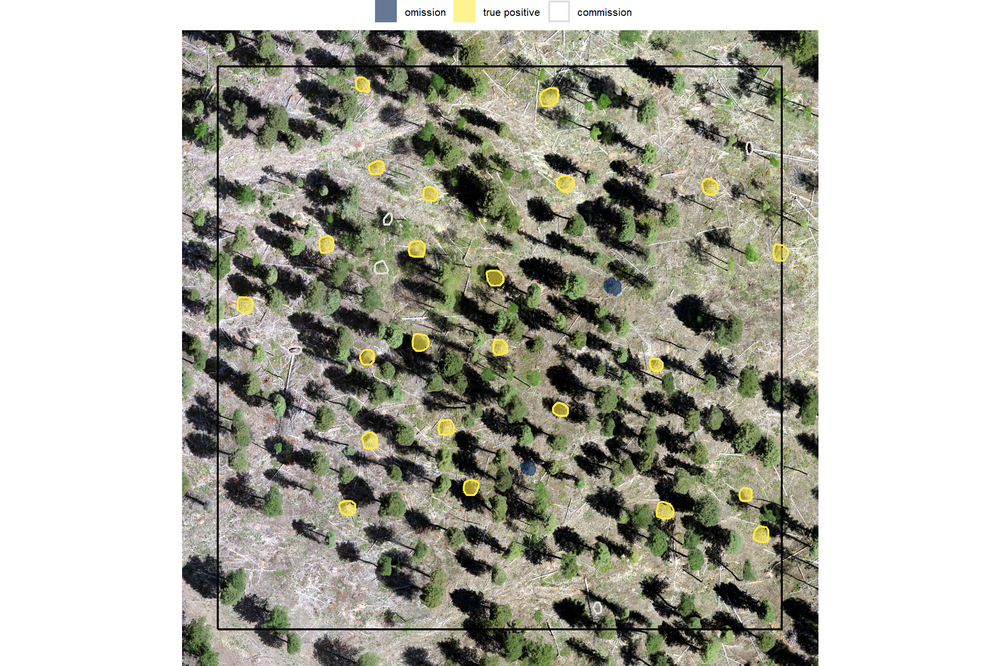
5.2.2 Full Study Area
we’ll look at only predicted and ground truth piles that intersect with the unit boundary for our instance matching
ground_truth_prediction_match_ans <- ground_truth_prediction_match(
ground_truth = slash_piles_polys %>%
dplyr::filter(is_in_stand) %>%
dplyr::arrange(desc(field_diameter_m)) %>%
sf::st_transform(sf::st_crs(predicted_watershed_piles_sf))
, gt_id = "pile_id"
, predictions = predicted_watershed_piles_sf %>% dplyr::filter(is_in_stand)
, pred_id = "pred_id"
, min_iou_pct = 0.05
)let’s look at that spatially for the entire area
# plot it
ortho_plt_fn(my_ortho_rast = ortho_rast, stand = stand_boundary %>% sf::st_transform(sf::st_crs(ortho_rast)), buffer = 10) +
# ggplot2::ggplot() +
ggplot2::geom_sf(data = stand_boundary %>% sf::st_transform(sf::st_crs(ortho_rast)), fill = NA, color = "black", lwd = 0.8) +
ggplot2::geom_sf(
data =
slash_piles_polys %>%
dplyr::filter(is_in_stand) %>%
dplyr::left_join(
ground_truth_prediction_match_ans %>%
dplyr::select(pile_id,match_grp)
, by = "pile_id"
) %>%
sf::st_transform(sf::st_crs(ortho_rast))
, mapping = ggplot2::aes(fill = match_grp)
, color = NA ,alpha=0.6
) +
ggplot2::geom_sf(
data =
predicted_watershed_piles_sf %>%
dplyr::filter(is_in_stand) %>%
dplyr::left_join(
ground_truth_prediction_match_ans %>%
dplyr::select(pred_id,match_grp)
, by = "pred_id"
) %>%
sf::st_transform(sf::st_crs(ortho_rast))
, mapping = ggplot2::aes(fill = match_grp, color = match_grp)
, alpha = 0
, lwd = 0.3
) +
ggplot2::scale_fill_manual(values = pal_match_grp, name = "") +
ggplot2::scale_color_manual(values = pal_match_grp, name = "") +
ggplot2::theme(legend.position = "top") +
ggplot2::guides(
fill = ggplot2::guide_legend(override.aes = list(color = c(NA,NA,pal_match_grp["commission"])))
, color = "none"
)
counts of instance matching results
ground_truth_prediction_match_ans %>%
dplyr::count(match_grp) %>%
dplyr::mutate(pct = (n/sum(n)) %>% scales::percent(accuracy=0.1))## # A tibble: 3 × 3
## match_grp n pct
## <ord> <int> <chr>
## 1 omission 13 5.5%
## 2 commission 115 48.7%
## 3 true positive 108 45.8%it looks like we did a really good job correctly predicting the location of actual piles (yellow) but that we incorrectly predicted pile locations at a relatively high rate. Our false positive predictions (i.e. commmissions) were frequently located in areas with quaking aspen (Populus tremuloides) which has many more short trees than the treated conifer areas.
let’s quickly look at the IoU values on the true positives
## iou
## Min. :0.5763
## 1st Qu.:0.7836
## Median :0.8228
## Mean :0.8050
## 3rd Qu.:0.8458
## Max. :0.9284
## NA's :1285.2.2.1 Detection Accuracy
we’ll aggregate the raw instance match data to calculate our detection accuracy metrics
## # A tibble: 1 × 8
## tp_n fp_n fn_n omission_rate commission_rate precision recall f_score
## <dbl> <dbl> <dbl> <dbl> <dbl> <dbl> <dbl> <dbl>
## 1 108 115 13 0.107 0.516 0.484 0.893 0.628let’s plot our confusion matrix
confusion_matrix_temp <- agg_ground_truth_match(ground_truth_prediction_match_ans)
confusion_matrix_scores_temp <- confusion_matrix_scores_fn(confusion_matrix_temp)
# plot
confusion_matrix_temp %>%
dplyr::select(tidyselect::ends_with("_n")) %>%
tidyr::pivot_longer(dplyr::everything()) %>%
dplyr::mutate(
presence = ifelse(name %in% c("tp_n", "fn_n"),1,0)
, estimate = ifelse(name %in% c("tp_n", "fp_n"),1,0)
) %>%
dplyr::mutate(
is_false = as.factor(ifelse(presence!=estimate,1,0))
, presence_fact = factor(presence,levels = 0:1,labels = c("Observed Absent", "Observed Present"))
, estimate_fact = factor(estimate,levels = 0:1,labels = c("Predicted Absent", "Predicted Present"))
, pct = value/sum(value)
) %>%
ggplot(mapping = aes(y = estimate_fact, x = presence_fact)) +
geom_tile(aes(fill = is_false), color = "white",alpha=0.8) +
geom_text(aes(label = scales::comma(value,accuracy=1)), vjust = 1,size = 8) +
geom_text(aes(label = scales::percent(pct,accuracy=0.1)), vjust = 3.5, size=5) +
scale_fill_manual(values= c("turquoise","tomato2")) +
scale_x_discrete(position = "top") +
labs(
y = "Predicted"
, x = "Observed"
, subtitle = paste0(
"True positive rate (recall) = "
, confusion_matrix_scores_temp$recall %>%
scales::percent(accuracy = 0.1)
, "\nPrecision (PPV) = "
, confusion_matrix_scores_temp$precision %>%
scales::percent(accuracy = 0.1)
, "\nF1-score = "
, confusion_matrix_scores_temp$f_score %>%
scales::percent(accuracy = 0.1)
)
) +
theme_light() +
theme(
legend.position = "none"
, panel.grid = element_blank()
, plot.title = element_text(size = 9)
, plot.subtitle = element_text(size = 9)
)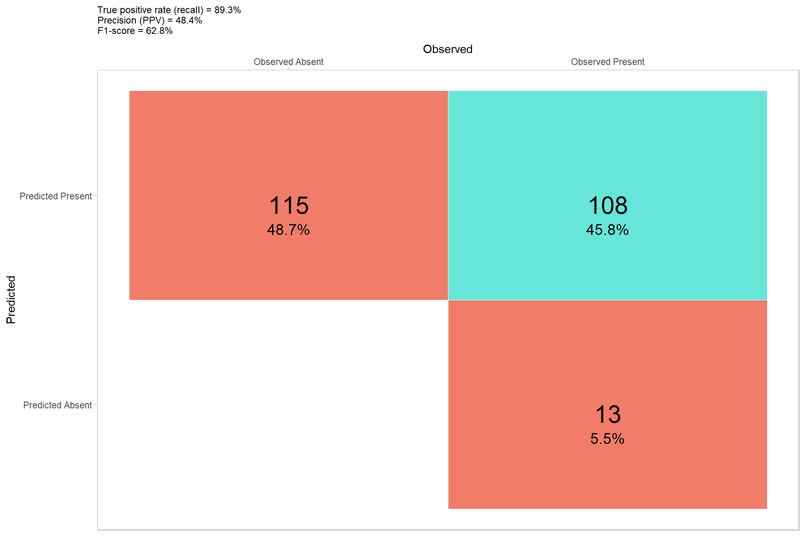
5.2.2.2 Quantification Accuracy
let’s add structural measurements to our instance matching data
first, we’ll review what structural information we already have for the predicted segments
## Rows: 520
## Columns: 8
## $ pred_id <dbl> 38, 55, 80, 104, 150, 151, 175, 233, 296, 313, 327, 33…
## $ area_m2 <dbl> 7.886308, 4.923938, 22.057642, 2.682145, 18.614888, 4.…
## $ volume_m3 <dbl> 15.930993, 14.787953, 65.423964, 4.271128, 27.613173, …
## $ max_height_m <dbl> 3.999429, 3.999000, 3.998000, 3.998000, 3.997000, 3.99…
## $ volume_per_area <dbl> 2.020083, 3.003277, 2.966045, 1.592430, 1.483392, 2.51…
## $ pct_chull <dbl> 0.8509719, 0.8453608, 0.7118863, 0.8993289, 0.7591837,…
## $ geometry <POLYGON [m]> POLYGON ((499303.2 4318059,..., POLYGON ((4998…
## $ is_in_stand <lgl> FALSE, FALSE, FALSE, FALSE, FALSE, FALSE, FALSE, TRUE,…Our quantification accuracy evaluation will be restricted to measurements that were directly collected across both sites (i.e. training and validation site). The ground truth dataset only includes direct data for field-measured height, field-measured diameter, and image-annotated area (based on pile perimeters). Accuracy and error metrics, such as ME, RMSE, and MAPE, will be only calculated for these direct measurements.
We exclude quantification accuracy metrics for derived values, such as volume, because the resulting value would not constitute a true “error”. Comparing our predicted volume to a volume that was not directly measured, but instead calculated using a geometric assumption (like assuming a perfectly circular base and paraboloid shape) would be inappropriate. This is because any resulting difference between the prediction and the ground truth would be a blend of three inseparable factors: the error of the remote-sensing prediction method, the error in the direct field measurements (diameter/height), and the error introduced by the geometric shape assumption. Reporting such combined errors would be misleading, as it would be impossible to isolate the true performance of our remote-sensing method alone.
Instead, data involving these derived values (e.g., predicted volume versus the volume based on field measurements and a shape assumption) will be treated simply as data points for insight into the differences. Using geometric shape assumptions for estimating pile volume is the standard practice when implementing prescriptions or preparing for slash pile burning (Hardy 1996; Long & Boston 2014). This comparison will help us understand the discrepancy between our irregularly shaped CHM-derived volume and the volume calculated assuming a perfectly circular base and paraboloid shape with field-measured height and diameter. This approach will still provide valuable context about the impact of the perfectly circular base and paraboloid geometric assumptions without falsely attributing the error of the simplified model to the remote-sensing method itself.
tl;dr: we already have height and area for our predicted piles, we need to calculate diameter. we will not use volume of the ground truth piles to calculate the error in volume measurement of predicted piles because we did not directly measure volume of the ground truth piles.
use our st_calculate_diameter() function to add diameter to the predicted piles
predicted_watershed_piles_sf <- st_calculate_diameter(predicted_watershed_piles_sf)
# predicted_watershed_piles_sf %>% dplyr::glimpse()now, we’ll add pile measurement data for both the ground truth and prediction data to our instance matched data. we’ll also calculate difference columns for the different measurements based on the formulas in this prior section
# add pile measurement data
ground_truth_prediction_match_ans <-
ground_truth_prediction_match_ans %>%
# join on gt area data
dplyr::left_join(
slash_piles_polys %>%
sf::st_drop_geometry() %>%
dplyr::select(pile_id, height_m, image_gt_area_m2, field_diameter_m) %>%
dplyr::rename(
gt_height_m = height_m
, gt_area_m2 = image_gt_area_m2
, gt_diameter_m = field_diameter_m
)
, by = "pile_id"
) %>%
# join on pred area data
dplyr::left_join(
predicted_watershed_piles_sf %>%
sf::st_drop_geometry() %>%
dplyr::select(pred_id, max_height_m, area_m2, diameter_m) %>%
dplyr::rename(
pred_height_m = max_height_m
, pred_area_m2 = area_m2
, pred_diameter_m = diameter_m
)
, by = "pred_id"
) %>%
# calculate difference columns
dplyr::mutate(
# area_m2
diff_area_m2 = pred_area_m2-gt_area_m2
, pct_diff_area_m2 = (gt_area_m2-pred_area_m2)/gt_area_m2
# height_m
, diff_height_m = pred_height_m-gt_height_m
, pct_diff_height_m = (gt_height_m-pred_height_m)/gt_height_m
# diameter_m
, diff_diameter_m = pred_diameter_m-gt_diameter_m
, pct_diff_diameter_m = (gt_diameter_m-pred_diameter_m)/gt_diameter_m
)let’s check out the relationship between our predictions and the ground truth data
df_temp <- ground_truth_prediction_match_ans %>%
dplyr::filter(match_grp == "true positive") %>%
dplyr::select(
pile_id
, (tidyselect::starts_with("pred_") | tidyselect::starts_with("gt_"))
) %>%
dplyr::select(-c(pred_id)) %>%
tidyr::pivot_longer(cols = -pile_id) %>%
dplyr::mutate(
which_data = stringr::str_extract(name, "^[^_]+")
, name = stringr::str_remove(name, paste0(which_data,"_"))
) %>%
tidyr::pivot_wider(
names_from = which_data
, values_from = value
) %>%
dplyr::mutate(
name = dplyr::case_match(
name
, "height_m" ~ "Height (m)"
, "area_m2" ~ "Area (m2)"
, "diameter_m" ~ "Diameter (m)"
)
)
plt_list_temp <-
unique(df_temp$name) %>%
purrr::map(function(x){
# get limit
max_val <- df_temp %>%
dplyr::ungroup() %>%
dplyr::filter(name==x) %>%
dplyr::summarise(max_gt = max(gt,na.rm = T),max_pred = max(pred,na.rm = T)) %>%
tidyr::pivot_longer(dplyr::everything()) %>%
dplyr::pull(value) %>%
max(na.rm = T)
plt <- df_temp %>%
dplyr::filter(name==x) %>%
ggplot2::ggplot(mapping = ggplot2::aes(x = gt, y = pred)) +
ggplot2::geom_abline(lwd = 1.5) +
ggplot2::geom_point(color = "navy", size = 2, alpha = 0.9) +
ggplot2::geom_smooth(method = "lm", se=F, color = "tomato", linetype = "dashed") +
ggplot2::scale_color_viridis_c(option = "mako", direction = -1, alpha = 0.8) +
ggplot2::facet_grid(cols = dplyr::vars(name)) +
ggplot2::scale_x_continuous(limits = c(0,max_val), breaks = scales::breaks_extended(n=7)) +
ggplot2::scale_y_continuous(limits = c(0,max_val), breaks = scales::breaks_extended(n=7)) +
ggplot2::labs(
x = "ground truth"
, y = "predicted"
) +
ggplot2::theme_light() +
ggplot2::theme(
strip.text = ggplot2::element_text(size = 11, color = "black", face = "bold")
)
return(plt)
})
patchwork::wrap_plots(
plt_list_temp
, ncol = 3
)
the method performed well at extracting the diameter of the pile when compared to the field-measured value with a slight overestimation overall. with respect to pile area, the method performed very well compared to the image-annotated pile perimeters but tended to under-predict area for the largest piles. the method’s height estimation was more variable in it’s accuracy when compared to the field-measured values and, on-average, performed well for the shorter and intermediate height piles but under-predicted pile height for the tallest piles, this suggests that we set our maximum height threshold too low (set at 4 for this demonstration) for these larger piles.
let’s look closer at the difference in area for each pile spatially
# look at this spatially
ggplot2::ggplot() +
ggplot2::geom_sf(
data = predicted_watershed_piles_sf %>%
dplyr::inner_join(
ground_truth_prediction_match_ans %>% dplyr::select(pred_id,diff_area_m2,pct_diff_area_m2)
)
, mapping = ggplot2::aes(fill = pct_diff_area_m2)
, color = NA
) +
ggplot2::geom_sf(
data = slash_piles_polys %>%
dplyr::inner_join(
ground_truth_prediction_match_ans %>% dplyr::select(pile_id)
)
, fill = NA, color = "blue"
) +
ggplot2::scale_fill_stepsn(
n.breaks = 7
, colors = scales::pal_div_gradient()(seq(1, 0, length.out = 7))
, limits = c(-max(abs(fivenum(ground_truth_prediction_match_ans$pct_diff_area_m2))),max(abs(fivenum(ground_truth_prediction_match_ans$pct_diff_area_m2))))
, labels = scales::percent_format(accuracy = 1)
, show.limits = T
) +
ggplot2::labs(fill = "% difference area") +
ggplot2::theme_void()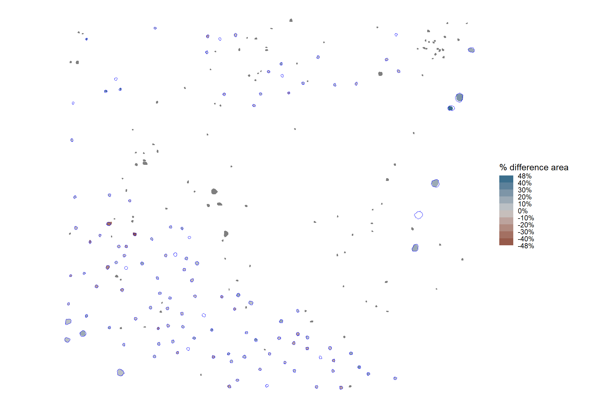
# and get a summary of the percent error
summary(ground_truth_prediction_match_ans$pct_diff_area_m2)## Min. 1st Qu. Median Mean 3rd Qu. Max. NA's
## -0.47831 -0.07621 0.00767 0.00729 0.08151 0.42779 128the ground truth, image-annotated area is well aligned with the predicted area for most piles (negative values indicate the predicted area is larger than the ground truth area and vice-versa)
and let’s look at the distribution of the difference in area (m2) calculated as the predicted area minus the image-annotated area so that negative difference values mean our predictions were smaller and positive values mean our predictions were larger (this is opposite of our percent difference value)
# plot the difference of the area
ground_truth_prediction_match_ans %>%
ggplot2::ggplot(
mapping = ggplot2::aes(x = diff_area_m2)
) +
ggplot2::geom_density(fill = "gray", color = NA) +
ggplot2::geom_vline(xintercept = median(ground_truth_prediction_match_ans$diff_area_m2,na.rm=T)) +
ggplot2::annotate(
"text", x = median(ground_truth_prediction_match_ans$diff_area_m2,na.rm=T), y = 0
, label = paste("median:",scales::comma(median(ground_truth_prediction_match_ans$diff_area_m2,na.rm=T),accuracy=0.1),"m2")
, hjust = 1.01, vjust = 1
) +
ggplot2::labs(y="density",x="area difference (m2)", subtitle = "Difference in area between predicted and image-annotated slash piles (m2)") +
ggplot2::theme_light() +
ggplot2::theme(axis.text.y = ggplot2::element_blank())
O_O nice
finally, we’ll aggregate the raw instance matches to calculate quantification accuracy metrics
# agg_ground_truth_match()
agg_ground_truth_match(ground_truth_prediction_match_ans) %>%
dplyr::glimpse()## Rows: 1
## Columns: 17
## $ tp_n <dbl> 108
## $ fp_n <dbl> 115
## $ fn_n <dbl> 13
## $ omission_rate <dbl> 0.107438
## $ commission_rate <dbl> 0.5156951
## $ precision <dbl> 0.4843049
## $ recall <dbl> 0.892562
## $ f_score <dbl> 0.627907
## $ diff_area_m2_rmse <dbl> 2.442577
## $ diff_diameter_m_rmse <dbl> 0.7078588
## $ diff_height_m_rmse <dbl> 0.655133
## $ diff_area_m2_mean <dbl> -0.4566056
## $ diff_diameter_m_mean <dbl> 0.4777459
## $ diff_height_m_mean <dbl> -0.09372698
## $ pct_diff_area_m2_mape <dbl> 0.1060726
## $ pct_diff_diameter_m_mape <dbl> 0.1708208
## $ pct_diff_height_m_mape <dbl> 0.1924974our area predictions are not very good, we’ll have to check out if those image-annotated areas are accurate
also, we can make a pretty table of these detection and quantification accuracy metrics
agg_ground_truth_match(ground_truth_prediction_match_ans) %>%
# first select to arrange eval_metric
dplyr::select(
# detection
f_score, recall, precision
# quantification
, tidyselect::ends_with("_mean")
, tidyselect::ends_with("_rmse")
# , tidyselect::ends_with("_rrmse")
, tidyselect::ends_with("_mape")
) %>%
# second select to arrange pile_metric
dplyr::select(
# detection
f_score, recall, precision
# quantification
, c(tidyselect::contains("volume") & !tidyselect::contains("paraboloid"))
, tidyselect::contains("area")
, tidyselect::contains("height")
, tidyselect::contains("diameter")
) %>%
dplyr::mutate(
dplyr::across(
.cols = c(f_score, recall, precision, tidyselect::ends_with("_mape"))
, .fn = ~ scales::percent(.x, accuracy = 1)
)
, dplyr::across(
.cols = c(tidyselect::ends_with("_mean"))
, .fn = ~ scales::comma(.x, accuracy = 0.01)
)
, dplyr::across(
.cols = c(tidyselect::ends_with("_rmse"))
, .fn = ~ scales::comma(.x, accuracy = 0.1)
)
) %>%
tidyr::pivot_longer(
cols = c(
f_score, recall, precision
, tidyselect::ends_with("_rmse")
, tidyselect::ends_with("_rrmse")
, tidyselect::ends_with("_mean")
, tidyselect::ends_with("_mape")
)
, names_to = "metric"
, values_to = "value"
) %>%
dplyr::mutate(
eval_metric = stringr::str_extract(metric, "(_rmse|_rrmse|_mean|_mape|f_score|recall|precision)$") %>%
stringr::str_remove_all("_") %>%
stringr::str_replace_all("mean","me") %>%
toupper() %>%
factor(
ordered = T
, levels = c("FSCORE","RECALL","PRECISION", "ME","RMSE","RRMSE","MAPE")
, labels = c("F-score","Recall","Precision", "ME","RMSE","RRMSE","MAPE")
)
, pile_metric = metric %>%
stringr::str_remove("(_rmse|_rrmse|_mean|_mape)$") %>%
stringr::str_extract("(paraboloid_volume|volume|area|height|diameter)") %>%
dplyr::coalesce("detection") %>%
stringr::str_c(
dplyr::case_when(
stringr::str_detect(metric,"(field|image)") ~ paste0(" (", stringr::str_extract(metric,"(field|image)"), ")")
, T ~ ""
)
) %>%
stringr::str_replace("area", "area m<sup>2</sup>") %>%
stringr::str_replace("volume", "volume m<sup>3</sup>") %>%
stringr::str_replace("diameter", "diameter m") %>%
stringr::str_replace("height", "height m") %>%
stringr::str_to_sentence()
, sorter = ifelse(pile_metric=="Detection",0,1)
) %>%
dplyr::arrange(sorter, pile_metric, eval_metric) %>%
dplyr::select(pile_metric,eval_metric,value) %>%
kableExtra::kbl(
caption = "pile detection and form quantification accuracy metrics"
, col.names = c(
".", ""
, "value"
)
, escape = F
) %>%
kableExtra::kable_styling(font_size = 12) %>%
kableExtra::collapse_rows(columns = 1, valign = "top")| . | value | |
|---|---|---|
| Detection | F-score | 63% |
| Recall | 89% | |
| Precision | 48% | |
| Area m2 | ME | -0.46 |
| RMSE | 2.4 | |
| MAPE | 11% | |
| Diameter m | ME | 0.48 |
| RMSE | 0.7 | |
| MAPE | 17% | |
| Height m | ME | -0.09 |
| RMSE | 0.7 | |
| MAPE | 19% |
remember, these metrics are just for a test case of the method we just outlined. we’re going to formalize this detection method and then explore different parameterizations of the method to determine a range of expected accuracies based on the input data and settings.
5.3 Watershed Pile Detection Function
The rule-based method for slash pile detection using CHM raster data we reviewed above generally follows this outline:
- CHM Generation: A Canopy Height Model (CHM) is generated from the point cloud data. The CHM is generated by removing the ground surface effectively representing a Digital Surface Model (DSM) without ground, ensuring all values are heights above bare earth.
- CHM Height Filtering: A maximum height filter is applied to the CHM to retaining only raster cells below a maximum expected slash pile height (e.g. 4 m), isolating a “slice” of the CHM. A final step includes filtering candidate segments based on an expected minimum height threshold as well to remove any piles shorter than this expectation.
- Candidate Segmentation: Watershed segmentation is performed on the filtered CHM raster to identify and delineate initial candidate piles based on their structural form.
- First Irregularity Filtering: Candidate pile locations are initially filtered to remove highly irregular shapes by assessing their overlap with their convex hull (e.g. >70% overlap). This step helps exclude lower tree branches (objects with holes in the lower CHM slice) and unorganized coarse woody debris.
- Area Filtering: A filter is applied based on the minimum and maximum expected pile areas.
- Circularity Filtering: A final geometric screen uses least squares circle fitting on each candidate pile, removing any that do not have a strong overlap (based on an Intersection over Union, or IoU, threshold) with the best-fit circle (e.g., >50%). This removes non-circular features such as rectangular boulders and downed tree stems.
- Shape Refinement & Overlap Removal: Lastly, segments are smoothed using their convex hull to remove the “blocky” raster edges (like they were made in Minecraft). Overlapping convex hull shapes are then removed to prevent false positives from clustered small trees or shrubs, ensuring singular pile detections.
Let’s package all of the steps we demonstrated when formulating the methodology into a single function which can possibly be integrated into the cloud2trees package.
The parameters are defined as follows:
max_ht_m: numeric. The maximum height (in meters) a slash pile is expected to be. This value helps us focus on a specific “slice” of the data, ignoring anything taller than a typical pile.min_ht_m: numeric. The minimum height (in meters) a detected pile must reach to be considered valid.min_area_m2: numeric. The smallest 2D area (in square meters) a detected pile must cover to be considered valid.max_area_m2: numeric. The largest 2D area (in square meters) a detected pile can cover to be considered valid.convexity_pct: numeric. A value between 0 and 1 that controls how strict the filtering is for regularly shaped piles. A value of 1 means only piles that are perfectly smooth and rounded, with no dents or inward curves are kept. A value of 0 allows for both perfectly regular and very irregular shapes. This filter works alongsidecircle_fit_iou_pctto refine the pile’s overall shape.circle_fit_iou_pct: numeric. A value between 0 and 1 that controls how the filtering is for circular pile shapes. Setting it to 1 means only piles that are perfectly circular are kept. A value of 0 allows for a wide range of shapes, including very circular and non-circular ones (like long, straight lines).smooth_segs: logical. Setting this option to TRUE will: 1) smooth out the “blocky” edges of detected piles (which can look like they were made in Minecraft) by using their overall shape; and 2) remove any detected piles that overlap significantly with other smoothed piles to help ensure each detection is a single slash pile, not a cluster of small trees or shrubs.
# detect funciton
slash_pile_detect_watershed <- function(
chm_rast
#### height and area thresholds for the detected piles
# these should be based on data from the literature or expectations based on the prescription
, max_ht_m = 4 # set the max expected pile height
, min_ht_m = 0.5 # set the min expected pile height
, min_area_m2 = 2 # set the min expected pile area
, max_area_m2 = 50 # set the max expected pile area
#### irregularity filtering
# 1 = perfectly convex (no inward angles); 0 = so many inward angles
# values closer to 1 remove more irregular segments;
# values closer to 0 keep more irregular segments (and also regular segments)
# these will all be further filtered for their circularity and later smoothed to remove blocky edges
# and most inward angles by applying a convex hull to the original detected segment
, convexity_pct = 0.7 # min required overlap between the predicted pile and the convex hull of the predicted pile
#### circularity filtering
# 1 = perfectly circular; 0 = not circular (e.g. linear) but also circular
# min required IoU between the predicted pile and the best fit circle of the predicted pile
, circle_fit_iou_pct = 0.5
#### shape refinement & overlap removal
## smooth_segs = T ... convex hulls of raster detected segments are returned, any that overlap are removed
## smooth_segs = F ... raster detected segments are returned (blocky) if they meet all prior rules
, smooth_segs = T
) {
# checks
if(!inherits(chm_rast,"SpatRaster")){stop("`chm_rast` must be raster data with the class `SpatRaster` ")}
max_ht_m <- max_ht_m[1]
min_ht_m <- min_ht_m[1]
min_area_m2 <- min_area_m2[1]
max_area_m2 <- max_area_m2[1]
if(
(is.na(tryCatch(as.numeric(max_ht_m), error = function(e) NA)) ||
identical(as.numeric(max_ht_m), numeric(0)) ||
!is.numeric(tryCatch(as.numeric(max_ht_m), error = function(e) NA))) ||
(is.na(tryCatch(as.numeric(min_ht_m), error = function(e) NA)) ||
identical(as.numeric(min_ht_m), numeric(0)) ||
!is.numeric(tryCatch(as.numeric(min_ht_m), error = function(e) NA))) ||
(is.na(tryCatch(as.numeric(max_area_m2), error = function(e) NA)) ||
identical(as.numeric(max_area_m2), numeric(0)) ||
!is.numeric(tryCatch(as.numeric(max_area_m2), error = function(e) NA))) ||
(is.na(tryCatch(as.numeric(min_area_m2), error = function(e) NA)) ||
identical(as.numeric(min_area_m2), numeric(0)) ||
!is.numeric(tryCatch(as.numeric(min_area_m2), error = function(e) NA))) ||
!(as.numeric(max_ht_m) > as.numeric(min_ht_m)) ||
!(as.numeric(max_area_m2) > as.numeric(min_area_m2)) ||
as.numeric(max_ht_m)<0 ||
as.numeric(min_ht_m)<0 ||
as.numeric(min_area_m2)<0 ||
as.numeric(max_area_m2)<0
){
# Code to execute if any condition is met (e.g., print an error message)
stop("Error: One or more of `max_ht_m`,`min_ht_m`,`min_area_m2`,`max_area_m2` are not valid numbers, or the conditions max_area_m2>min_area_m2 or max_ht_m>min_ht_m are not met.")
}else{
max_ht_m <- as.numeric(max_ht_m)[1]
min_ht_m <- as.numeric(min_ht_m)[1]
min_area_m2 <- as.numeric(min_area_m2)[1]
max_area_m2 <- as.numeric(max_area_m2)[1]
}
# just get the first layer and "slice" the raster based on the height threshold
chm_rast <- chm_rast %>%
terra::subset(subset = 1) %>%
terra::clamp(upper = max_ht_m, lower = 0, values = F)
# could make this a parameter
# could automatically adjust for raster cell size:
# higher res (smaller cell size) get bigger ws, lower res (larger cell size) get smaller/no ws???
# get resolution which will be used to test against the minimum expected pile area
chm_res <- max(terra::res(chm_rast)[1:2],na.rm = T)
ws_for_smooth <- ws_for_smooth_fn(chm_res = chm_res, min_area_m2 = min_area_m2) # 3 # needs to be the same for the watershed seg and CHM smooth
# search_area = (res^2) * (ws^2)
########################################################################################
## 1) watershed segmentation
########################################################################################
# let's run watershed segmentation using `lidR::watershed()` which is based on the bioconductor package `EBIimage`
# return is a raster with the first layer representing the identified watershed segments
watershed_ans <- lidR::watershed(
chm = chm_rast
, th_tree = min(0.1,min_ht_m)
)()
names(watershed_ans) <- "pred_id"
# vectors of segments
watershed_ans_poly <-
watershed_ans %>%
terra::as.polygons(round = F, aggregate = T, values = T, extent = F, na.rm = T) %>%
setNames("pred_id") %>%
sf::st_as_sf() %>%
sf::st_simplify() %>%
sf::st_make_valid() %>%
dplyr::filter(sf::st_is_valid(.)) %>%
# simplify multipolygons by keeping the largest polygon of each multipolygon
dplyr::mutate(treeID=pred_id) %>%
cloud2trees::simplify_multipolygon_crowns() %>%
dplyr::select(-treeID)
########################################################################################
## 2) irregularity filtering
########################################################################################
# let's first filter out segments that have holes in them
# or are very irregularly shaped by comparing the area of the polygon and convex hull
# convexity_pct = min required overlap between the predicted pile and the convex hull of the predicted pile
if(convexity_pct>0){
# apply the irregularity filtering on the polygons
watershed_ans_poly <- watershed_ans_poly %>%
st_irregular_remove(pct_chull_overlap = convexity_pct)
}
# check return
if(dplyr::coalesce(nrow(watershed_ans_poly),0)==0){
stop(paste0(
"no segments detected using the given CHM and irregularity expectations"
, "\n try adjusting `convexity_pct` "
))
}
########################################################################################
## 3) area filtering
########################################################################################
# filter out the segments that don't meet the size thresholds
watershed_ans_poly <- watershed_ans_poly %>%
dplyr::mutate(area_xxxx = sf::st_area(.) %>% as.numeric()) %>%
dplyr::filter(
dplyr::coalesce(area_xxxx,0) >= min_area_m2
& dplyr::coalesce(area_xxxx,0) <= max_area_m2
) %>%
dplyr::select(-c(area_xxxx))
########################################################################################
## 4) circularity filtering
########################################################################################
# let's apply a circle-fitting algorithm to remove non-circular segments from the remaining segments
# let's apply the `sf_data_circle_fit()` function that
# fits the best circle using `lidR::fit_circle()` to each watershed detected segment
# to get a spatial data frame with the best fitting circle for each segment
if(circle_fit_iou_pct==0){
watershed_keep_circle_fit_pred_id <- unique(watershed_ans_poly$pred_id)
}else{
# apply the sf_data_circle_fit() which takes each segment polygon, transforms it to points, and the fits the best circle
watershed_ans_poly_circle_fit <- sf_data_circle_fit(watershed_ans_poly)
# filter using the intersection over union (IoU) between the circle and the predicted segment.
# we'll use the IoU function we defined
# we map over this to only compare the segment to it's own best circle fit...not all
# we should consider doing this in bulk.....another day
watershed_circle_fit_iou <-
watershed_ans_poly$pred_id %>%
unique() %>%
purrr::map(\(x)
ground_truth_single_match(
gt_inst = watershed_ans_poly %>%
dplyr::filter(pred_id == x)
, gt_id = "pred_id"
, predictions = watershed_ans_poly_circle_fit %>%
dplyr::filter(pred_id == x) %>%
dplyr::select(pred_id) %>% # keeping other columns causes error?
dplyr::rename(circ_pred_id = pred_id)
, pred_id = "circ_pred_id"
, min_iou_pct = 0 # set to 0 just to return pct
)
) %>%
dplyr::bind_rows()
# threshold for the minimum IoU to further filter for segments that are approximately round,
# this filter should remove linear objects from the watershed detections
# compare iou
watershed_keep_circle_fit_pred_id <- watershed_circle_fit_iou %>%
dplyr::filter(iou>=circle_fit_iou_pct) %>%
dplyr::pull(pred_id)
}
if(
identical(watershed_keep_circle_fit_pred_id, numeric(0))
|| any(is.null(watershed_keep_circle_fit_pred_id))
|| any(is.na(watershed_keep_circle_fit_pred_id))
|| length(watershed_keep_circle_fit_pred_id)<1
){
stop(paste0(
"no segments detected using the given CHM and circularity expectations"
, "\n try adjusting `circle_fit_iou_pct` "
))
}
########################################################################################
## 5) raster smoothing
########################################################################################
########################################
# use the remaining segments that meet the geometric and area filtering
# to smooth the watershed raster
########################################
smooth_watershed_ans <- watershed_ans %>%
terra::mask(
watershed_ans_poly %>% #these are irregularity and area filtered already
dplyr::filter(pred_id %in% watershed_keep_circle_fit_pred_id) %>%
terra::vect()
, updatevalue=NA
)
if(dplyr::coalesce(ws_for_smooth,0)>=3){
# smooths the raster using the majority value
smooth_watershed_ans <- smooth_watershed_ans %>%
terra::focal(w = ws_for_smooth, fun = "modal", na.rm = T, na.policy = "only") # only fill NA cells
}
names(smooth_watershed_ans) <- "pred_id"
########################################
# mask the chm rast to these remaining segments and smooth to match the smoothing for the segments
########################################
smooth_chm_rast <- chm_rast %>%
terra::mask(smooth_watershed_ans)
if(dplyr::coalesce(ws_for_smooth,0)>=3){
# smooths the raster to match the smoothing in the watershed segments
smooth_chm_rast <- smooth_chm_rast %>%
terra::focal(w = ws_for_smooth, fun = "mean", na.rm = T, na.policy = "only") #only for cells that are NA
}
# now mask the watershed_ans raster to only keep cells that are in the originating CHM
smooth_watershed_ans <- smooth_watershed_ans %>%
terra::mask(smooth_chm_rast)
########################################################################################
## calculate raster-based area and volume
########################################################################################
# first, calculate the area of each cell
area_rast <- terra::cellSize(smooth_chm_rast)
names(area_rast) <- "area_m2"
# area_rast %>% terra::plot()
# then, multiply area by the CHM (elevation) for each cell to get a raster with cell volumes
vol_rast <- area_rast*smooth_chm_rast
names(vol_rast) <- "volume_m3"
# vol_rast %>% terra::plot()
# sum area within each segment to get the total area
area_df <- terra::zonal(x = area_rast, z = smooth_watershed_ans, fun = "sum", na.rm = T)
# sum volume within each segment to get the total volume
vol_df <- terra::zonal(x = vol_rast, z = smooth_watershed_ans, fun = "sum", na.rm = T)
# max ht within each segment to get the max ht
ht_df <- terra::zonal(x = smooth_chm_rast, z = smooth_watershed_ans, fun = "max", na.rm = T) %>%
dplyr::rename(max_height_m=2)
# let's convert the smoothed and filtered watershed-detected segments from raster to vector data
# vectors of segments
watershed_ans_poly <-
smooth_watershed_ans %>%
terra::as.polygons(round = F, aggregate = T, values = T, extent = F, na.rm = T) %>%
sf::st_as_sf() %>%
sf::st_simplify() %>%
sf::st_make_valid() %>%
dplyr::filter(sf::st_is_valid(.)) %>%
dplyr::mutate(treeID=pred_id) %>%
cloud2trees::simplify_multipolygon_crowns() %>%
dplyr::select(-treeID)
# add area and volume to our vector data
# we'll do this with a slick trick to perform multiple joins succinctly using purrr::reduce
watershed_ans_poly <-
purrr::reduce(
list(watershed_ans_poly, area_df, vol_df, ht_df)
, dplyr::left_join
, by = 'pred_id'
) %>%
dplyr::mutate(
volume_per_area = volume_m3/area_m2
) %>%
# filter out the segments that don't meet the size thresholds
dplyr::filter(
dplyr::coalesce(area_m2,0) >= min_area_m2
& dplyr::coalesce(area_m2,0) <= max_area_m2
& dplyr::coalesce(max_height_m,0) >= min_ht_m
) %>%
# do one more pass of the irregularity filtering
st_irregular_remove(pct_chull_overlap = convexity_pct)
if(dplyr::coalesce(nrow(watershed_ans_poly),0)==0){
stop(paste0(
"no segments detected using the given CHM and expected size thresholds"
, "\n try adjusting `max_ht_m`, `min_area_m2`, `max_area_m2` "
))
}
########################################################################################
## 4) shape refinement & overlap removal
########################################################################################
# use the convex hull shapes of our remaining segments.
# This helps to smooth out the often 'blocky' edges of raster-based segments
# , which can look like they were generated in Minecraft.
# Additionally, by removing any segments with overlapping convex hull shapes,
# we can likely reduce false detections that are actually groups of small trees or shrubs,
# ensuring our results represent singular slash piles.
if(smooth_segs){
### ORIGINAL didn't combine touching segments first
# return_dta <- watershed_ans_poly %>%
# sf::st_convex_hull() %>%
# sf::st_simplify() %>%
# sf::st_make_valid() %>%
# dplyr::filter(sf::st_is_valid(.)) %>%
# dplyr::filter(pred_id %in% watershed_keep_circle_fit_pred_id) %>%
# st_remove_overlaps() %>%
# # now we need to re-do the volume and area calculations
# dplyr::mutate(
# area_m2 = sf::st_area(.) %>% as.numeric()
# , volume_m3 = area_m2*volume_per_area
# ) %>%
# dplyr::filter(
# dplyr::coalesce(area_m2,0) >= min_area_m2
# & dplyr::coalesce(area_m2,0) <= max_area_m2
# )
# combine polygons that share a common border but don't overlap
comb_watershed_ans_poly <- watershed_ans_poly %>%
dplyr::filter(pred_id %in% watershed_keep_circle_fit_pred_id) %>%
st_dissolve_and_combine() %>%
dplyr::rename(id_comb_xxx = id)
# recalculate metrics
agg_comb_watershed_ans_poly <- comb_watershed_ans_poly %>%
sf::st_intersection(
watershed_ans_poly %>%
dplyr::filter(pred_id %in% watershed_keep_circle_fit_pred_id)
) %>%
sf::st_drop_geometry() %>%
dplyr::group_by(id_comb_xxx) %>%
dplyr::summarise(
area_m2 = sum(area_m2, na.rm = T)
, volume_m3 = sum(volume_m3, na.rm = T)
, max_height_m = max(max_height_m, na.rm = T)
) %>%
dplyr::mutate(
volume_per_area = volume_m3/area_m2
)
# bring together
comb_watershed_ans_poly <-
comb_watershed_ans_poly %>%
dplyr::inner_join(agg_comb_watershed_ans_poly, by = "id_comb_xxx") %>%
dplyr::rename(pred_id = id_comb_xxx) %>%
# filter out the segments that don't meet the size thresholds
dplyr::filter(
dplyr::coalesce(area_m2,0) >= min_area_m2
& dplyr::coalesce(area_m2,0) <= max_area_m2
& dplyr::coalesce(max_height_m,0) >= min_ht_m
) %>%
# do one more pass of the irregularity filtering
st_irregular_remove(pct_chull_overlap = convexity_pct) %>%
# simplify multipolygons
dplyr::mutate(treeID=dplyr::row_number()) %>%
cloud2trees::simplify_multipolygon_crowns() %>%
dplyr::select(-treeID)
# watershed_ans_poly %>% dplyr::glimpse()
# comb_watershed_ans_poly %>% dplyr::glimpse()
# apply st_convex_hull
return_dta <- comb_watershed_ans_poly %>%
sf::st_convex_hull() %>%
sf::st_simplify() %>%
sf::st_make_valid() %>%
dplyr::filter(sf::st_is_valid(.)) %>%
st_remove_overlaps() %>%
# now we need to re-do the volume and area calculations
dplyr::mutate(
area_m2 = sf::st_area(.) %>% as.numeric()
, volume_m3 = area_m2*volume_per_area
) %>%
dplyr::filter(
dplyr::coalesce(area_m2,0) >= min_area_m2
& dplyr::coalesce(area_m2,0) <= max_area_m2
)
}else{
return_dta <- watershed_ans_poly %>%
dplyr::filter(pred_id %in% watershed_keep_circle_fit_pred_id)
}
# calculate diameter
return_dta <- st_calculate_diameter(return_dta)
# return
return(return_dta)
}
#################################################
# intermediat functions
#################################################
# rounds to nearest odd since ws for terra::focal() only takes odd
round_to_nearest_odd <- function(x) {
rounded_int <- round(x)
# step 2: check if the rounded integer is already odd
is_odd <- (rounded_int %% 2 != 0)
# step 3: for numbers that rounded to an even integer, find the nearest odd
odd_down <- rounded_int - 1
odd_up <- rounded_int + 1
# calculate the absolute distances from the original number 'x'
dist_down <- abs(x - odd_down)
dist_up <- abs(x - odd_up)
# step 4: use ifelse for vectorized conditional logic
result <- ifelse(
is_odd
, rounded_int # if the initially rounded integer is odd, use it
, ifelse(
dist_down < dist_up
, odd_down # if odd_down is strictly closer
, odd_up # if odd_up is closer or equidistant
)
)
return(result)
}
# round_to_nearest_odd(c(2,2.2,1.5,0))
# find window size given res and min expected area
ws_for_smooth_fn <- function(chm_res,min_area_m2){
if(length(min_area_m2)>1){stop("min_area_m2 must be a single numeric value")}
# return
dplyr::case_when(
T ~ 0 ## all will be 0 so smoothing won't happen
###!!!!!! original attempt down here...just remove T ~ 0 !!!!!!###
, (chm_res*3) > (min_area_m2/2) ~ 0 # the minimum ws of 3 exceeds half of the expected area (coarse)
, T ~ round( (min_area_m2/4) / chm_res ) %>% round_to_nearest_odd() %>% max(3) # has to be odd and at least 3
)
}
# dplyr::tibble(res = seq(0.01,0.5,by=0.01)) %>%
# dplyr::rowwise() %>%
# dplyr::mutate(
# ws = ws_for_smooth_fn(res, 2) # min_area_m2=2
# , area = ifelse(ws==0, res*res,
# (res^2) * (ws^2))
# , area_prop = area/2 # min_area_m2=2
# ) %>%
# ggplot() +
# # geom_line(aes(x=res,y=ws)) +
# # geom_line(aes(x=res,y=area)) +
# geom_line(aes(x=res,y=area_prop)) +
# # scale_y_continuous(breaks = scales::breaks_extended(n=22)) +
# scale_y_continuous(breaks = scales::breaks_extended(n=22), labels = scales::percent) +
# scale_x_continuous(breaks = scales::breaks_extended(n=20))let’s test this real quick on our example area
# terra::plot(example_aoi_chm, axes = F, legend = F)
# terra::plot(
# example_aoi %>% sf::st_transform(sf::st_crs(example_aoi_chm)) %>% terra::vect()
# , add = T, border = "black", col = NA, lwd = 1.2
# )
slash_pile_detect_watershed_ans_temp <- slash_pile_detect_watershed(
chm_rast = example_aoi_chm
, max_ht_m = 4.5
, min_ht_m = 0.5
, min_area_m2 = 2
, max_area_m2 = 50
, convexity_pct = 0.8
, circle_fit_iou_pct = 0.5
)
# what did we get?
slash_pile_detect_watershed_ans_temp %>% dplyr::glimpse()## Rows: 34
## Columns: 8
## $ pred_id <int> 1, 2, 3, 4, 5, 6, 7, 8, 9, 10, 11, 12, 13, 14, 15, 16,…
## $ area_m2 <dbl> 4.12, 4.84, 8.28, 9.12, 8.76, 9.06, 7.64, 10.70, 8.42,…
## $ volume_m3 <dbl> 3.436257, 3.979143, 9.554492, 9.208540, 10.130051, 9.7…
## $ max_height_m <dbl> 4.460059, 4.264971, 2.684000, 2.520000, 2.418000, 2.36…
## $ volume_per_area <dbl> 0.8340429, 0.8221369, 1.1539241, 1.0097083, 1.1563985,…
## $ pct_chull <dbl> 0.8349515, 0.8429752, 0.9178744, 0.9122807, 0.9223744,…
## $ geometry <POLYGON [m]> POLYGON ((499484 4317759, 4..., POLYGON ((4995…
## $ diameter_m <dbl> 3.162278, 3.052868, 3.605551, 3.720215, 3.544009, 3.72…how does it look overlaid on the CHM?
terra::plot(example_aoi_chm, col = viridis::plasma(100), axes = F)
terra::plot(slash_pile_detect_watershed_ans_temp %>% terra::vect(),add = T, border = "brown", col = NA, lwd = 3)
how do the form quantification measurements look?
p1_temp <- slash_pile_detect_watershed_ans_temp %>%
ggplot2::ggplot() +
ggplot2::geom_sf(mapping = ggplot2::aes(fill = area_m2)) +
ggplot2::scale_fill_distiller(palette = "Blues", direction = 1) +
ggplot2::labs(x="",y="") +
ggplot2::theme_light() +
ggplot2::theme(legend.position = "top", axis.text = ggplot2::element_blank())
p2_temp <- slash_pile_detect_watershed_ans_temp %>%
ggplot2::ggplot() +
ggplot2::geom_sf(mapping = ggplot2::aes(fill = volume_m3)) +
ggplot2::scale_fill_distiller(palette = "BuGn", direction = 1) +
ggplot2::labs(x="",y="") +
ggplot2::theme_light() +
ggplot2::theme(legend.position = "top", axis.text = ggplot2::element_blank())
p3_temp <- slash_pile_detect_watershed_ans_temp %>%
ggplot2::ggplot() +
ggplot2::geom_sf(mapping = ggplot2::aes(fill = max_height_m)) +
ggplot2::scale_fill_distiller(palette = "YlOrBr", direction = 1) +
ggplot2::labs(x="",y="") +
ggplot2::theme_light() +
ggplot2::theme(legend.position = "top", axis.text = ggplot2::element_blank())
p4_temp <- slash_pile_detect_watershed_ans_temp %>%
ggplot2::ggplot() +
ggplot2::geom_sf(mapping = ggplot2::aes(fill = diameter_m)) +
ggplot2::scale_fill_distiller(palette = "PuRd", direction = 1) +
ggplot2::labs(x="",y="") +
ggplot2::theme_light() +
ggplot2::theme(legend.position = "top", axis.text = ggplot2::element_blank())
(p1_temp + p2_temp) / (p3_temp + p4_temp)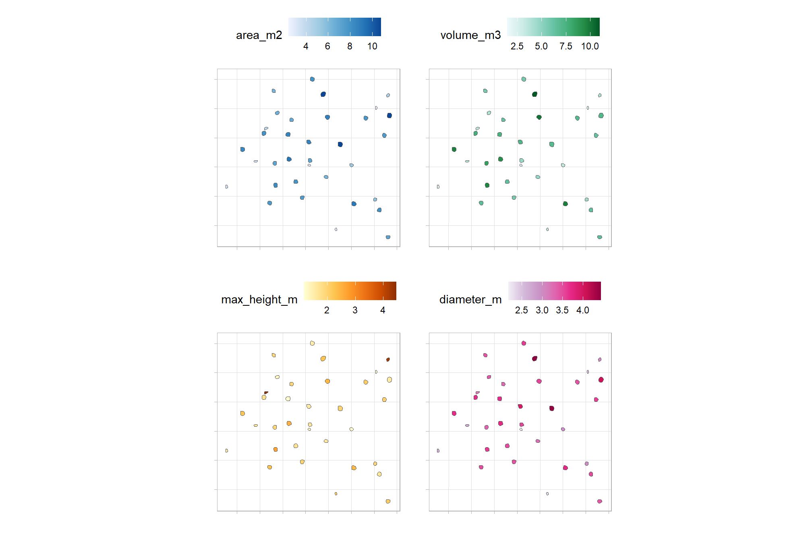
the volume per area ratio (volume_per_area) quantifies the “effective” height or depth of that volume relative to the area it occupies; this ratio may not be very useful for anything other than scaling estimates to relate a three-dimensional quantity (volume) to a two-dimensional quantity (area)